一， １９７５年（三十周年記念展））
一．池田徳一（長崎市伊良林町一ー六一）
（蜂の巣状の焼夷弾筒）
私は敗戦当時、海軍特攻隊員として呉港外の特攻基地にいました。三
十年前のことなので、何月何日に転勤になったものか、それすらはっ
きりしなかったのですが、貴会発行の「呉戦災を記録する会 会報
Ｎｏ１」に記載されている資料を見せて頂き、それが七月一日である
ことがわかりました。
と言うのは、転勤したその夜、呉市が大空襲にあい、夜空をこがして
赤々と燃え上がったのを覚えているからです。私たち若い兵隊は、特
攻隊で死ぬことより、基地に行けば特配があって、甘い物がたくさん
食べれるということを何よりの楽しみにしていたもので、その何より
の期待がその夜の空襲でみごとに打ち破られ、当分、甘い物の配給は
ないと聞いたときの落胆ぶり・・・今思っても情けないくらいでした。
数日後、何かの用事で班長に引率されて呉へ参りましたが、その火災
の跡はすさまじく、川の洲の中にまるで蜂の巣のような焼夷弾の筒が
つきささり（はじめは何だかわからずに、しばらく見ていて焼夷弾の
薬莢だと判明したのですが・・・）こんな密度でばらまかれてはひと
たまりもないなあ、と語り合ったものです。
七月二十八日 日本海軍全滅の日、あれはその前映画で見ていた
「ハワイ・マレ－沖海戦」の中のハワイ空襲のようでした。何時ごろ
だったかおぼえていません。空をおおう艦載機の群でした。グラマン、
双胴のロッキ－ド・シコレスキ－など、写真で見憶えのある戦闘機の
姿が空中を乱舞し、呉港外にのし上げていた戦艦、重巡などの連合艦
隊におそいかかったのです。
動けない戦艦は、まるでおそわれるままにまかせた鈍重なけものみた
いなもので、主砲をあげて何発かぶっぱなしましたが、それは全く滑
稽で、あわれな姿でした。
意外だったのは、軍艦が燃えるということでした。
メラメラと一晩中燃えていたようです。そして次の日は赤茶けた残姿
を、みにくく海岸にさらしていたのです。
あれはきっと塗料が燃えたのだと、みんなで話した記憶があります。
イ号やロ号の潜水艦も被災したように聞きました。
大変残念なことに、私は自分がいた島の名を知らないのです。私が
忘れたのではなくて、どうもあの頃の特攻隊では、その地名を隊員に
教えなかったようなのです。ですから、一度出かけて行って、私の青
春の思い出の地を訪ねようと思いながら、今日までその機会を持てな
いでいるのです。
私がいたのは、呉港外で、江田島のひとつ向こうの島（これもあやし
い記憶ですが・・・）そこに特殊潜航艇の基地があって、工場はその
対岸の（これも島のようでした）向こう側にあったようです。私たち
は、毎朝、上陸用舟艇で、その工場へ通ったようにおぼえています。
目次へ
二． 匿名 ．．．（鹿田から見た呉空襲と市街の惨状）
昭和二〇年七月四日、私は勤務先の呉海軍工廠から呉市東鹿田町の
自宅へ帰宅した。その頃妻は、郷里へ疎開して一人で生活していた。
その為食事等は殆ど工廠内で済ませて帰り、自宅では只寝るだけの生
活の状態であった。
夏の暑い時候であるので二階の部屋で窓を開けて休んでいると、つい
ウトウトと寝入ってしまったらしい。一〇時頃であったと思うが、空
襲警報で目が覚め防空服装を着け階下へ降り、家の玄関に作っていた
簡単な地下式防空壕へ入りかけたが、どうも木造建築の下の簡単な壕
では不安なので、隣の奥さんなどを誘って隣の藤原さんが造っておら
れた横穴壕へ入らせてもらいに行った。
既に他の隣の人達も来ておられ、いつでも退避出来るように壕の入口
付近で話していると、飛行機の爆音が聞こえて赤い尾灯が川原石方面
の上空を動いているのが見えたかと思う。
飛行機から数個の黄色く光る焼夷弾が投下され、街の家並の屋根に達
したと思うとパッと火柱が挙がり、続いてその付近が大きな焔に包ま
れるのが望見された。
私がいたところは一五丁目の電車亭留所から、畑へ行く本通のカーブ
の上にあたる丘の中腹にあり、川原石方面ははるか眼下に見下せる位
置にあった。その夜は月夜ではないが晴れた夜であったので、川原石
方面の街の家並も一軒一軒の影は区別できないが、ほの明るい空に対
して街の家並みはシルエットのように空に対していたので、焼夷弾に
よる火災は打上花火を逆に空から地上へ打ったようで、焼夷弾が屋根
に達すると殆ど瞬間的に燃え上がり、本当に美しく見えた。
攻撃は、川原石方面から次第に呉市の周辺部に移り、平原水源地の方
にも火の手が挙がった。こうして攻撃は市の周辺部を焔上させて、そ
の中へ向かって絨毯爆撃を加えているらしく、急に市内は騒がしくなっ
てきたので、私達は壕内へ退避した。
どの位時間が経った知らないが飛行機の音も止み、市内も稍や静かに
なったので壕から出て自宅へ帰り仮眠した。幸いに火は一四丁目まで
延焼し、自宅までは来なかったので、工廠のことが気になり、いつも
より早めに出勤する。
昨夜の空襲の時は、防空壕から丁度目の下に見えた三宅千福の酒倉が
尚燃えていて、大きな酒桶（ホソ）が高い黒煙を挙げていて、時々爆
発的に赤い焔を出していたが、今朝はホソは完全に燃えつきていて、
鉄製のホソの輪（たが）が、ホソのあった処へ数個宛重なっているの
が見える。
電車は勿論上がっており、電車通りを歩いて工廠に向かう道という道
は、散乱したガラスの破片と焼き落された電線とで、足の踏み場もな
いようになっている。
漸く出勤してみると工員の大部分は出勤していて、中には戦災を受け
て家や家財を失った者もいるが、本人も家族も皆安全のようであり、
作業は続ける。
工員の一人で、その頃東北の多賀城に長期出張している者があり、そ
の人の住居も被災地域にあるので、家族の安否調査に行くよう命ぜら
れ、午後になって登町方面へ探しに行く。
市街地へ行くにつれ戦災の悲惨な状況が見えて来る。
和庄通りから登町方面へ行く。この方面は、山の斜面に家があった関
係で家を焼き払われた跡は、高い石垣の屋敷跡ばかりが目につく。
人影もあまり見当らない登町の先の方まで行ってみたが、尋ねる家族
の消息はつかめない。
やがて横穴防空壕のある付近で沢山の死者が焼け跡に置いてあるのに
出会った。
被災者は横穴に入っていて煙により窒息死したとかで、焼けた屋敷の
石垣付近に菰一枚で巻かれて置かれていて、菰からはみ出した手足は
黒く焼けたのがあり、黄色くなったのや、赤いのや青いのがあり、種々
の色をしており、本当に悲惨な有様であった。中でも私の心を打った
のは、小学生位の男の児の死体で、絣の着物を着て菰に巻かれて大人
の死体に並べて置かれている光景であった。
暫く探しているうちに尋ねる人の消息も分かり帰廠し報告した。外に
もこの戦災で防空壕内での死者相当数の上ることがうわさされていた。
目次へ
三．宮原 康久（呉市西中央５丁目五ー十二）
「 生活を破壊した呉空襲」
話したくない戦災当時の思い出、ゾっとして今でも身震いする位で
す。
７月１日は私の誕生日です。何故この日に、この世の地獄に遭うの
かと思うと、真っ黒い谷底へ突き落とされたような気がして、運命の
皮肉さには申し上げる言葉さえ出ませんが．．．
私の家は旧市内の端、北迫町にありまして、隣の稲荷町･古川町は建
物疎開で道路の幅が広くなって、火災の時でも火の移りにくい、当時
としては一等地にありました。屋敷が約三百坪、庭木に囲まれた家屋
の二階には、呉海軍工廠の電気部長(当時少将)の下宿先になって居りま
した。軍の電話もついて居りまして、皆からうらやまれるくらいでし
たが．．．
あの恐ろしい七月一日の真夜中、敵機から落下する焼夷弾の異音に目
を覚ましてびっくり．．．早速部長さんを起こしてから、我が家の庭
の防空壕に、親子三人待避して居りました時に、自分の目前にドラム
缶の様な大きな火の玉が落下して命中。広かった家屋が一瞬にして火
災に包まれたのです。
今まで無風だったのが、急に風が強くなって．．．裏隣の広い屋敷に
は呉工廠の砲熕部長(当時少将)宅だけ残って、次から次へと類焼して、
この世の地獄となって．．．消防自動車は全然姿を見せません。
町内の丘の大きい防空壕へ命からがら逃げたのです。火の玉の降って
くる中を子どもを抱いて恐かったです。敵機が去って薄々と夜が明け
てから焼け跡に帰り、唯ただ茫然となって居りました。焼け跡にはガ
レキと残り火が盛んに燃えて居りました。
断水ですから困りました。寸時してから救援のおにぎりが届きました
が、食べるのに箸が無いのに閉口しました。
この惨状は味わった者でないと分からない精神的苦痛は一生忘れる事
が出来ません。
目次へ
二，１９９５年（五十周年記念展）
（六月二十八日～七月二日 呉市役所１階ロビー）
一 佐々木富三（安芸郡海田町蟹原二丁目四ー三三 八〇才）
...（戦争はもう沢山）
呉空襲時・・・旧和庄四丁目に住んでいました。空襲警報が鳴って
屋外に出たとたん顔に小雨のようなものがかり、雨でもないのに変だ
なと思ったとき清水通り辺りに照明弾が落とされて、パッと明るくな
り、妻子に避難をするようすすめている時、第一回目の爆弾が落とさ
れ、第２第３の爆弾により次々に焼けてゆきました。翌朝船に乗るべ
く桟橋方面に行く途中に累々と死者の方々が並んで目を覆いたくなる
気持ちでした。
三月十九日の空襲で本船の兵員も20名くらいの戦死者を出しまし
た。
私は兵隊として戦争をするのが職務でしたが、あんな悲惨な戦争と
いうものはもう沢山です。
目次へ
二 池上多恵子（広島市中区江波西一ー二十八ー八）..
（水を飲ませたっかた）
今年もつらい悲しいご命日が参ります。ちょうど50年前です。
昭和20年七月一日深夜から２日未明にかけて焼夷弾の中を東公園
で逃げ回りました。足下へ焼夷弾が落ち、飛び退きました。
人のいる所をめがけて焼夷弾が降ってきます。
高いガケより飛び降りて逃れました。長迫国民学校の５年生でした。
七月二日の朝９時ごろ次々と担架で運ばれるのを見て、走って校庭
に入ると、一面に息も絶え絶えの多くの人たちが炎天下地面の上にそ
のまま整然と声なく横たわっていました（声が出ない状態）。夏の強
い太陽の下でどんなにか水が飲みたかったでしょう。おじさんが「水
を飲ませないでください。飲むとすぐに死にますから」と走って回ら
れましたので、すぐそこに水道があってもお水を飲んでもらうことは
できませんでした。
（今、思うと最後の時には飲ませてあげればよかったと思います）
その時はお水を飲むと死ぬのなら飲まなければ助かるかもわからな
いとほんの少し希望がありました。
その中で一番幼い朝日町の数え年四才の女の子の手をにぎると大き
く目を見開いて、私をしっかりと見つめてくれました。
すでにぼんやりとして見えなかったのでしょうか、女の子と私はし
ばらく見つめあっていました。
手をやわらかく握ると女の子も握り返してくれます。
幾度か握り返しあって、私は少し安心しそのまま女の子の手を加減
して握っていました。
六月十四日に神戸高等商船学校と大阪高等商船学校呉長迫分校のお
兄さんたちが出陣されてわずか二日後の六月十六日に輸送船が撃沈さ
れ悲しい思いの真最中の時でした。
側に岩佐先生が来られ「この子はもう駄目じゃね」と云われ、私は
頑張っているのに意味が解ると大変心配しました。先生はダメねと思
いました。
十三時五十分、静かに眼を閉じました。
唯一の慰めは、苦しむ様子は見られず、きれいであったことです。
本当に可愛い可愛い姿でした。
お母ちゃんに可愛い服を着せてもらっていました。死出の衣装です。
その女の子より一人置いてお母さんらしい人が地面に寝ていました
が、私が女の子の側で足を止めたので、心配でたまらず上半身起き上
がろうとされ力が入らずバタッと倒れました。
又、一、二年生の時、同じクラスであった山口君とお母さんは防空
壕でそのままだったのか、母が心配して探しに参りましたが、家は焼
失して二人の姿はありませんでした。
校庭にも見つからず、そのまま親戚へゆかれたとも思えず、お手紙
も来ないので駄目だったのであろうと、旧人の供養と神戸・大阪の高
等商船学校のお兄さんたちの御供養をさせていただいております。
今も、いえ、永遠につらく悲しい六月十六日、七月二日、八月六日
です。 合掌
目次へ
三 久保....（両城の丘で見た呉空襲）
あの時から丁度五十年後の今日、一九九五・七・一 一七・〇〇に
空襲展を見てこのペ－ジに思いつくままにボ－ルペンを進めています。
あの日の一日の夜中から明け方にかけてのことが今でも鮮明に思い
出される。
私は当時中一の中学生で、両城の丘に下宿していた。
あの夜、「プ－」「プ－」「プ－」という警報と下宿先の長男の声
で目がさめた。
高い塀から対面の所を見ると、バラバラと火がばらまかれた。また、
呉市街の周りを火をばらまいて行き、中心部へとばらまいて行ったよ
うに思う。
下宿から、裏の山の頂上近くにいつ行ったのか定かではないが、気
が付くと山の上から空襲の様子を眺めていた。
下の街の（三条通り辺りか）あちこちからお互いの名を呼んだり、
確かめ合ったりする声が聞こえてきて、今でもパチパチという燃える
音とともに耳底のどこかに残っている。
夜明けとともに、くすぶり続ける煙の中に見える街の姿はあわれな
ものであったと思うが、当時は「遂に呉市も焼かれた」かという想い
をもったのではないかと思う。
下宿は被災をまぬがれたが、下宿の離れに老婆が住んでいた。その
老婆がフトン持ち出しを手伝うように要請されたが、親切にしてやる
ことができなかった。
あの晩以降、老婆との人間関係がギクシャクした。
朝となり、くすぶり続ける街中を通って、実家のある島へとその日
は帰って行った。
島の家に着くと、私を見つけた今は亡き母が「目が真赤じゃの」と
言われたとき、くしゅんとはならなかったが一瞬、下を向いた。
あの当時のことは思い出したくもないが、あの時、下からばかり、
あの日の夜を見たり、Ｂ29を見ていたので、当のＢ29からの見た姿は
どんなであったと思い、展示会を見に来た。
「ああ、あれだったのだな」と思うことも随分したし、感無量のも
のもあった。
目次へ
四．掛井 義行（広島市安佐南区安東四丁目一六ー六）
...焼夷弾筒を寄贈
私は当時、呉市境川通２丁目に住み、本通９丁目にありましたバプテ
スト教会が、広島県警察部警備隊呉小隊の宿舎になっており、その隊
員として勤務しており、戦災当日は宿直勤務でありました関係で、同
宿舎で戦災にあいました。
したがって、境川通の自宅はもちろん宿舎も焼失し、夫婦ともに、着
のみ着のままの状態になり、同月十日に次勤務地、広島市比治山本町
に移り、八月六日の原爆被災者となった者です。
それでも同僚その他大勢の被爆死亡者があったにもかかわらず、私は
死をまぬがれる事ができ、現在に至っているのは有難いことと感謝し
ている次第であります。
七月一日、私達の宿舎に投下された「焼夷弾の筒と高射砲の破片」も
し参考となれば使用して下さい。私の所有権は放棄いたします。
目次へ
第三部 資料編
一 罹災者の一人となって
（中国新聞昭和二〇年七月二〇日付） 林海軍報道班員（本社）記
（戦時中の報道管制の厳しい中での、記者自身の体験記は珍しい。
当局からの教科書通りの消火活動がいかに無理なことか、戦意昂揚を
述べながら、隠れた本音を報告している。当時の時代的な雰囲気を良
く示している。）
罹災者の一人となって
降り注ぐ二十数発
火たたき執って焼夷弾と取っ組む
敵が火の雨を降らすことは平常覚悟し、話にもしていた。十分の心構
えはあった。準備もしていた。必需品の疎開もやった。それが七月一
日の夜、現実となったのである。
自分は前進基地における爆撃の体験は十分あったが、暗闇の夜から雨
と降り注ぐ焼夷弾は初めてであった。それで平常の覚悟とこの現実と
の間には矢張り相当の距離がある（ことが分かった）
丁度非番で、自宅にあって警戒と空襲警報に接したが、この間の時間
がやっと一人の老母の支度と自分の身支度をするぐらいの時間しかな
かったので、一寸気分が落ち着けないまま、外に飛び出した。
その出鼻を、あまり広からぬ家に二十数発の火の玉が空から躍り込ん
だ。最初はサッと一瞬の恐怖感が背を走る。それは自分の近所は疎開
がまだ十分でなく、火に囲まれる怖れが多分にあったからとも言える
が、この最初の恐怖は、何度爆撃を経験しても自分は常に感じる。し
かもこの時は「何くそ」と思うと同時に直ぐに何かの行動に出ること
である。火叩きを取って、見つけた最初の火の玉に踊りかかると、こ
れで一切の恐怖はなくなるものである。
次々と五、六発は消した。水よりも砂がたしかに早く消えた。しかし
一度に二〇発あまりであるから、一人ではどうにもならない。妻は老
人を見守る（ため）横穴にかけていた？これがいけなかったのだ。大
げさな言い方だが「大義親を滅して」一人の大切な老母という気持ち
を捨てて、田舎かどこかに疎開させておくべきであったが、これを敢
行していなかったため（その時）一人であった。
バリバリと天井が燃え出した。ふと外を見れば、すぐ下の家は丈余の
火焔を噴き出している。しかし気分は案外冷静であったが、裏の壕に
母と妻を呼びに行った。七二歳の足弱の老人を火焔の下をくぐって避
難さすときに反って不安が強くなった。頭上に火の雨が降るやら、で
も自分の上にはなかなか落ちるものではない。やっと火焔に包まれる
おそれのないところまで連れ出して、静かに敵機の姿を求めた。敵機
は一機及至数機が高度○○で進入している。雲が厚くて姿は時々しか
見受けられない。
雲間から見える敵機は実に憎々しく振る舞っている。自分の家のこと
よりは、何卒一区域でも火の拡がらぬようにという気持ちが一杯で市
中を見守っていたのである。
百年余の古いなつかしい生家を一夜に失うという現実にあった只今の
胸中と、火焔の下を避難する時の気持ちとはまた大分距りがある。平
常の心構え－これの実現－罹災した今日の覚悟－とにそれぞれ相当の
距りがある。たしかに三段論法になっている。罹災して焼野原に立っ
てみて、言うには言われぬすがすがしい気分と、盛り上がる戦意が平
常の心構えのうちにあったら……と今にして反省している。何物も惜
しいとは思わぬ純粋に戦意一本になった気持ちである。この気持ちで
徹底的に疎開を断行し、自己の周囲を決戦体制下に即応せしめている
べきだったと思う。凡人は三段論法を正しく歩まぬと最後の覚悟に到
着し得ないのだ。非凡な人、哲人、いや本当に戦局を躾として身につ
けている人は、三段論法を確かに飛躍して最後の覚悟まで持っている
人であろう。自分はこの非凡の人、戦局を真に身につけた日本人になっ
ていなかったことを恥？じた。
そして、まだ罹災していない方々に「大義親を滅す」といふ、ほん
とに思いきった決戦態勢になっていられる様に念願し、そして防空態
勢には「決してゆきすぎ」といふことはないことを重ねて申し上げた
い。
目次へ
二 あれからちょうど十年（上）
（中国日報 記事 八.一六.一七.一八）
（呉空襲後の取材メモを基に、暖めていた内容を十年後の記念日に
やっと記事にできた。記者の目で、歩くことで、直接取材した呉空襲
の具体的な被害状況を、客観的に全体的に報道した唯一の貴重な記事
である。）
終戦の日訪う 焼野原の呉市
見たまま、聞いたまま
（前略）
呉線に入るに、海岸側のヨロイ窓カ－テンを締める者はなく、注意
する者もいない、停戦の大詔あっての故ではあるまい、山陽本線でも
軍人の客が多く、いつのまにか窓を開けて多少でも涼を入られていた
から、たまたまの空襲警報にも窓から空が眺められたから。 呉線海
岸の未完成トンネルは軍の倉庫にあてられている。遥か沖、狩留賀海
岸にも御用船が繋留されているが一隻は損傷して甚だ傾斜している、
開戦の頃、坂、矢野沖合から宇品沖にかけてみられた荷役中らしい壮
観は今は見るべくもない。（それが軍艦で双方とも擱座していたもの
とはあとから知った）
列車は呉止まりか、広までか、糸崎行か、海田市発車の際駅員に尋
ねても不明のまま、案じている客が多かったが、呉より更に先まで行
くらしい。車中、停戦の大詔に関する話はあまり聞かれず、何れもま
だ疑心暗鬼のもののようであった。
あれからちょうど十年（中）
終戦の日訪う
焼野原の呉市
見たまま、聞いたまま
呉駅の降車客は戦災地というに相当あり、海軍関係にかかわるもの
と、街の戦災も時日を経過しているためであろう、また、この列車が
入るまでに四時間を経過しているセイもあろう。
駅は貨物上屋の一部のほか全焼（その他は路線橋の下に枕木を重ねた
待避壕のみ残っており、ここで現場事務がとられている。焼跡はキレ
イに整理され、駅前広場の一部をなしているので、旧建物の位置さえ
思い出しかねる。右側の銃後奉公会のバラック建が不思議に焼け残り、
ここが切符売場となり、それに隣接の人力車夫の溜り場が駅前派出所
と化している。
一瞬焼け野原の中に、駅前増岡組本店とその東方に松本参議院議員
の本宅と二つ残っているのは、耐火煉瓦のため延焼を免れたものであ
ろう（何れも水交社に徴発されていると、のちに聞く）
今西通にかかる右側は疎開ずみ、左側の旅客自動車庫（木造）と隣る
鉄筋の市電変電所が無事だが、二丁目角の中国新聞社疎開跡、その向
こう側に積み重ねてあった同社の移転用材も黒焦げ。
焼け野原は遠く灰ヶ峰山麓に及び、東方高地部も中腹まで焼けている。
西方は大したこともないらしい。死の街広島を見た目には、約三分の
一ぐらいの被害。
ところどころに樹木も残っており北、西の高地には残存家屋もあり大
して驚くほどのこともないが、これが愛する第二の故郷の変わり果て
た姿かと思えば、ひとしおの淋しさを感ぜずにはいられない。
駅前を電車道に出てみると、角にあった三和銀行の支店が跡形もな
い、木造コンクリには、ありし日をしのぶすべもない、さすがは鉄筋
の電話課（今の電話局）で、鉄筋だけに異常なく、かねて各窓には爆
風を避る防材も施してあったほどに、内部には異常ないらしい。
この電話課建物の隣接家屋は表三間を奥まで疎開ずみ、この次には電
車道を隔てた向かい側も疎開する予定のようだったが、その必要はな
かったようだ。隣る郵便本局の木造は助かるはずもなく、堺橋の呉警
察署も表玄関の壁だけ残している。
向かい合う消防署なる鉄筋建は異常なし。橋の袂の呉市信用組合は金
庫の残骸だけ残している。この堺川岸の両側の家並みは戦時下大疎開
して堺川を中に蔵本通と堺川通との大幅な空地が設けられ、如何なる
大火災にも川を越えての延焼はないものとされていたが、この大空襲
に遭うては疎開空地の如き何の役にも立っていない、ただ僅かに避難
地をなしたのみであろう。南方にガスタンクが不思議に残っている、
海軍防火隊に護られたのだろう。
堺橋を渡って、もと海工会なる報国団本部焼跡に早くも仮設の事務
所を開かれているほか、中通にいたるまで何もない。焼跡のまま四ツ
道路の旧銀行建物なる市交通局は焼け残る倉庫にバラックを継ぎ足し
て辛うじて事務をとっており電車が運転されておるのが、唯一の街の
鼓動である。
電車も動いていなかったら、広島同様全く死の街であろう。もちろん
少数ながらトラックの運転はあり、今なお海軍の存在を思わしめてお
りはするが・・
丘の水交支社が焼失しているのに、その下方の亀山町の一角が焼け
残っているのは、どうした風の吹き回しだったろう。四ツ道路を清水
通にあがるに、亀山町に向かい合わす元町の入口辺りに数軒が戦禍を
免れている、それから上は、右手の海親会、第二門付近から、海軍病
院の裏門、病室と帯の如く嘗め尽くされ、左側の民家は海軍が建物に
近いので第六疎開で撤去されることになっていたが、その疎開が完了
していたのかどうかわからぬが、とも角跡形もない。
清水通をのぼりつめて、神応院はすでになく、付近を疎開して保護
されていた清水通小学校もない、万年寺を残して、東方一帯の焼け野
原は、あの辺にも家があったのかと思われるほど、山の中腹深く残骸
が残っている。
宮原通は、堀割の辺りから二、三丁目にかけて焼け、見降ろす海軍
構内は、海兵団の歴史的赤煉瓦が半壊、新兵舎も形を残すは一、二棟
のみ。はるか呉駅裏一帯に軍需部倉庫が密集していたのも疎らとなっ
ているように見られる。旧防備隊、病院はあるも、旧建築部なる施設
部が見えない。鎮守府本庁舎は真ん中に直撃弾を受けガラン堂になっ
ていると聞いていたが、ここから見ただけではわからない。軍法会議
は影もない。
あれからちょうど十年（下）
終戦の日訪う
焼野原の呉市
見たまま、聞いたまま
（ 呉についたその晩“停戦”については、あちこち街の話を聞いて
も何もわからない、だから“敗戦”と信じることも出来なかった、が
翌１６日朝のラジオには確かに“敗戦”“降伏”の語句があり、宣告
された衝撃を覚える。鈴木内閣総辞職のニュ－スもあるが、昨日から
不可解な“共同宣言”については、ラジオも何一つ解説してくれない。
目はさめているが、ここ１週間の疲労は回復せず、起き上がる元気も
ない。メシはことわって携帯のミソでミソ汁をたいて腹をつくる。そ
のうちに町内の臨時常会のフレがあった。“従来通り“灯火管制を厳
重に”とのほか、停戦については何事もない。“昨日は昼夜４回も防
空壕にかけり込んだが、今日は空襲はあるまい”と話されるのも、な
んだか気が抜けたようで、張り合いがない・・・敗戦のためとあって
は。）
朝の間、宮原一帯の被害をみるに４、５丁目を過ぎた６丁目ごろか
ら所々に罹災跡がある、中には建物疎開跡もあるが、確かに焼跡が多
い、この一帯７月１日の大空襲は免れているが、その前の工廠爆撃に
ソレ弾を喰ったものが多いという、７丁目下の水野前市長邸も跡方が
ない、はるか工廠を見降ろすと造船、造機は無事であるが、砲熕水雷、
製鋼と造兵部は全滅の状態。
過ぐる日の市街大空襲の模様を聞くに、第１波ではまだ火の手はあ
がらなかったが、第２第３波が清水通３丁目神応院あたりまっすぐ北
に進み本通１４丁目あたりを折れ、長ノ木、内神から二河公園の、も
と海軍監獄裏手の山林を焼き、南に折れて三津田から西本通に向けて
編隊は脱去、かくて、海岸をのぞく市の三方が猛火に包まれるや、さ
らに第４波が中通、本通から西へ中心部めがけて焼夷投弾に及んだも
のだという。
西部は最初の投弾が公園裏から山林だったので避難に混乱が少なかっ
たが、和庄方面は恵まれた横穴壕に避難したのが却って禍いで、折柄
の風に平坦部から吹き込む猛火に多数の人が蒸し焼されたという。
（このため水道はとまり、電灯も数日後の復旧、電話は当分見込みが
ないと）
市役所の移転先という二河公園へと出かける。神原あたりの焼け跡
にポツンと残る外側はあるも、屋根が落ちている、避難の際、これは
予想しなかったことであろう“防空壕にかけつけた女が入口で荷物を
降ろすや、背負ったは子供の筈だったにと気づいた途端止めるのもき
かず狂気の如くに猛火の中へ引き返したが、遂に帰らなかった”との、
今朝聞いた話も、このあたりだったろう。
亀山神社は本殿のコンクリ基盤を残すのみ、されど、その跡に早く
も小祀が設けられており、参拝客をみる。元町、寺西町を本通に出る
に、三和、呉、芸備、住友の鉄筋四銀行が残っているほか、この一帯
罹災前を回想する手がかりはない。三和支店奥手に広大な塀と倉庫棟
のレンガ作りを残すのは山中紀三郎邸だったろう。その塀の外に方一
間ぐらいの小屋掛をして靴修繕の看板が出ている、これが呉商店街を
継ぐ唯一の店構えである。
このほか焼跡には人の気はない、中通を出るにこれが何丁目か見当さ
えつかない、盛り場の跡形もない、僅かに八丁目の喜楽館の外廓を見
出す、さらによく注意すれば、カフェ－松月の入り口にあったライオ
ン像を浮かす大理石像が、築石と共にかつての享楽の名残りを止めて
いる。
更に西へ進むに、形を残しているのは、疎開事務所だった商工会議
所、海兵団岩方兵舎だった丸中工場新館、市役所新庁舎の、いずれも
鉄筋のみ、されど内部を侵されなかったのは、会議所のみ。神田町七
丁目を呉会館講堂は天井の鉄筋がへし曲がって墜落しており、北に西
教寺説教所の大ガランもない、大内山の煙突と三階湯のレンガ塀が僅
かに目標をとどめている石風呂山の裁判所付近に木造が二三と、九丁
目筋疎開道路を境に北側高台に残存家屋があるのは当時の火勢が東に
向いていたことを思わしめる。
市役所は公園内衛生参考館を本庁に、園内に移転していた民家を土
木部に、女子高小校を税務課になど配置、呉警察署の看板は市立図書
館に掲げられている。市の非常持出書類は新庁舎の地下室に納めてい
たが、明りとりのガラス窓から火が入ったがか、地下室から燃え下っ
たか、同庁の内部と共に全部焼失、宿直二名は防火に活動して惨死し
たという。（もっとも前年十月までの重要書類は郡部に疎開してあり、
戸籍謄本、土地台帳等は公園内の横穴壕に移してあった）
目次へ
三 呉空襲体験記 第一集（呉三津田高校） １９７５年
（全国的にも、呉でも、地域の空襲・戦災を記録する運動が盛り上
がり、学校現場では、生徒を通じて体験者からの記録の収録活動が行
われ、文集が作られました。記憶もまだ確かな時代の記録集として紹
介します。）
一 戦 慄
打田 勝彦
（広十一空廠に学徒動員されていた三月十九日、五月五日の爆弾や機
銃による猛爆撃のようすを感覚的に伝えたい。Ｂ二十九の一トン爆弾
の恐ろしさ、被害のものすごさを体験した。残存艦隊への爆撃も悲惨
だった。）
昭和二〇年八月六日は朝から家にいた。中学四年生であったが「通
年動員」というもとに、前年の六月から学校には全く行かないで海軍
航空廠の工員として働いていた。
ちょうど、六日は夜勤明けで家にいた。
広島から直線距離で二五キロメートル高い山をいくつも越えた広町
のわが家である。
広島の方向にまともに向いた雨戸を開け障子を立て、机に向かってい
たら「ピカッ！」と家の中全体が光った。はじめ「どこかショートか
な」と思い、幅一〇〇メートルばかりの川向こうにある変電所で「な
にかあったのかな」と次に思った。 しばらくすると「ドーン」という
音とともに障子が「ガタッ」とゆれた。光と音との間合、音の大きさ
と衝撃の度合などから、かなり遠方で、もっとでっかいことがあった
のではと思い障子を開けた。
はるか山の上にむくむくと原子雲（もちろん後になってそう知った）
が上がるのを見た。
被爆経験の最初は、その年三月の艦載機の空襲だった。今、米軍基
地になっている黄幡にあった工場で働いていた。空襲警報と同時に工
場から飛び出し広警察署へ向かって走った。私たち中学生何名かは空
襲警報何が鳴るとそうするよう命令されていたのだ。今まで訓練では
しばしば聞いた警報だし、それに対処する行動をとってきた事態だっ
たが初めて本番である。
いささかあわて気味で空をみながら走った。工場全体が騒然として
いる。建物のそばの待避壕に入ろうとするもの、山のトンネルへ急ぐ
者、なにか叫びながら走っている者、まだ機械を動かして者もいる。
一緒に走っていたＯ君が叫んだ。「あれは何だ！！」
みんなが野呂山の上空を見る。迎撃に飛び立った味方の飛行機か。
いや違う。アメリカ機だ。写真でおなじみのグラマンだ。五、六機編
隊飛行を解いて一機ずつ私たちの方入急降下しつつある。警報が鳴っ
て、まだものの三分とたっていない。
一斉にそばの溝にうつ伏せた。「バリバリ……ダダダ、ダーン！！」
おそらく機銃掃射と爆弾の破裂音だろう。一連の音が鳴り終わると
すぐまた走りだした。工場から警察署まで二キロメ－トルを一気に走っ
た。あまり怖いとは思わなかった。爆撃の恐ろしさをまだ知らなかっ
たのだ。
広署の防空壕から時々顔を出しては、飛行機の飛び交う様子や対空
砲火のすさまじさを見ていた。対空砲火は、すごかった。広町の空が
弾幕であった。しかし、アメリカ機には、なかなか当たらない。
この時の空襲では、飛行機製作工場がねらわれ、かなりの被害者が
出た。それでも一〇日余りもすればすぐ復旧できる程度のものだった。
町中にも誤爆の弾がかなり落ちた。横路小学校や中新開、町田あたり
の家にも被害があった。
恐ろしさを骨身にきざまれたのは、五月のＢ２９編隊による一屯爆
弾の攻撃であった。私は夜勤明けで家で寝ていた。
この頃には、空襲警報には慣れっこで何時もは、Ｂ２９が一機悠々
と飛んで行く。航空写真でもとっているのだろう。美しい飛行雲をは
きながら………。
はるか下のあたり、高射砲がポン、ポンと花火のように挙がる。と
ころがその日は違っていた。東の空に無数のＢ２９がキラキラ機体を
輝かせながらやってくる。きれいだった。しかし、数秒後はげしい大
雨の降る音（爆弾の落下音）、もはや美しいなどとは言っておれない。
自分の頭の上に、そうでなければ極めて至近距離に……と思って防
空壕でちぢこまった。「ヅヅ、ヅシーン」。と軽やかな音ではない。
内臓までゆさぶる「ＤＺＵ、ＤＺＵ……」だ。土地ごと家がゆれる。
体が浮きあがるようだ。絶え間ない爆裂音と風圧。またしても「ザァー
ヅヅヅドーン、ヅヅドドン！！」今度は頭の上だ。今にふっとぶ、も
うダメだと思い続けた。
五万人もの人が働いていた工場は壊滅した。やられた工場から二キ
ロメートル以上離れた所にいて、こんな思いだったのだ。工場内にい
た人達はどんな思いだったのだろう。二・三日して、それぞれの思い
を語るのを聞いた。
山のトンネルの中でさえ「生きた気がしなかった」という。「ふる
えが止まらなかった」という。それよりも思いを語ってくれなかった
人が沢山いた。遠い工場で働いていて、近くの防空壕で直撃弾を受け
死んだ呉一中の生徒達が何名かいた。昨日まで一緒に話し合った一八
才の青年は特別機銃隊員に選ばれ、空襲警報と同時に横幡の山の上に
作られた銃座に急ぎ二度と帰って来なかった。都合で広駅に出て、汽
車を待っていたＩ君のお母さんは小さい妹とともに死んでいった。
鉄筋三階を大穴をあけて突き抜け、床面に一〇数メートルの穴を掘
り、内部のすべてを破壊し尽くす威力だった。被害がどれほどか、公
表はされず、正確には把えられなかった。ただ作業を再開するには相
当の日数いることは直観できたし、もと通りの復旧は不可能のように
思えた。
すでに黄幡の山は無論のこと、広のほとんどの山は、トンネル壕が
掘られ、工作機械が入って仕事をしていた。しかし、トンネルに入れ
ない工程を持った工場も多く、まだ避難していなかった工場もあった。
それらの大部分が痛めつけつられていたのだ。
私達の工場は爆風で相当の損傷を受けていたが直撃弾は当っていな
かった。さっそく二級峡トンネル（道路として工事中のものを借用）
への移転が開始されそこでの作業が始まった。
ドイツは、すでに降伏し、沖縄での悲痛な戦いが続いていた。工場
が移転してから後も何度も空襲は受けたが、私達は、山の上から傍観
しているのみだった。
昔日の光栄を担ってはいるものの、帝国海軍連合艦隊は油がないの
で動けなくなった。呉周辺の内海の島影には残存艦があちらに一隻こ
ちらに一隻、と松の木を擬装して、止まっていた。情島のそばに航空
戦艦「日向」がいた。
ある晴れ上った暑い日に、この艦は米軍艦載機の餌食となった。何
十という飛行機が繰り返し攻撃するさまがよく見えた。
「やられている！！」「やってる！！やっている！！」
いくら攻撃されても「日向」は微動だにしないかに見えた。しかし、
実際はそこは修羅場だったのだ。第一波の攻撃でおびただしい死者と
負傷者がでてほとんど戦闘能力をなくしていた。救援要請で沢山の医
者と看護婦が便船でおくりこまれ救助活動が始まった直後、第二派の
攻撃を受け、救助におもむいた人たちを含めて、多くの兵隊が死んで
ゆき「日向」自身もすでに沈んでいたのだが、浅瀬にいたので遠くか
らは厳然と不動の姿に見えたのだった。
戦争が華やかなショ－に見えることもある。爆弾の雨降る中で、呻
き、叫び、焼け心でいる。その時、次々と爆弾をを投下した飛行士た
ちにはどう映っただろうか。街全体が火の海と成り、周辺の山々をも
焼きこがす眼下の光景は、まさにショ－そのものではなかたのか。
「戦争」経験も傍観者の立場からは真実を把らえにくい。騒音と振
動、爆風の中で戦慄していた事実のみが私のささやかな被爆経験とい
えよう。
目次へ
二．呉工廠空襲体験記
高取 穂
（呉海軍工廠電池工場で勤務中に受けた数度の爆弾空襲の恐怖が甦り
ます。工場や防空壕の中のようす、具体的で詳細な被災の模様が描か
れています。防空壕で女子挺身隊員が生き埋めになり、潮が満ちて死
にました。）
昭和二〇年七月一日夜から二日未明にかけての呉市空襲については
多くの体験者がおられますが、呉工廠の中で爆撃を受けた人は少ない
ので、私の体験をぜひ書き残しておきたいと思ってペンをとりました。
私が呉工廠に入社したのは大正九年（一九二〇）、一三歳のときで
した。私の本職は工作設計の仕事です。三〇歳の頃、太平洋戦争たけ
なわとり、設計は、もはや不必要となりました。現場の基地設営のた
め、水雷部電池工場（俗にこう呼ぶが、呉工廠地図には練電工場と記
されている）に入りました。これが十八年でした。
呉工廠が爆撃されたのは、昭和二〇年六月二十二日でした。この日
は朝九時ごろから正午過迄に三回の波状爆撃がありました。新聞やラ
ジオのニュースによると艦載機グラマンが一日に延べ七五〇機襲来し
たといわれています。
この日第一回めの爆撃は朝九時から十時ごろまで砲塔工場が爆撃さ
れました。Ｂ二九爆撃機による爆弾の投下でした。
第二回めの爆撃は私の勤めている電池工場が爆撃を受けたのです。
私たちは空襲警報が出されたので海岸の防空壕に避難していました。
電池工場は現在の海上自衛隊潜水艦基地の南側（現在は淀川製鋼の事
務所になっている）にありました。
この電池工場に投下された爆弾（直径一メートル位の俗に一ｔ爆弾
という）の威力はすざまじく、直径も一五メートル、重さ約二，三ｔ
くらいもある一〇〇キロワット電動機が工場の三階屋上まで吹っ飛ば
されていました。この電動機の下に地下防空壕があってこの爆撃のと
きその防空壕は破壊され、電池工場で働いていた四〇～五〇人のうち
殆どは死亡したと思われます。
この地下壕に入ってなかった人は私と同じ海岸の防空壕に入ってい
たのでこの時は助かりました。人間の運命なんて分からないものです。
電池工場で働いている人たちは空襲警報が出たときは電動機の下の防
空壕でも海岸の防空壕でも自分で自由に避難してよいことになってい
たのです。私がもし電動機の下の防空壕に入っていたらその時死んで
いた筈です。
この爆撃の後、九死に一生を得た男子四，五人、女子挺身隊女学生
二人のことを記します。
爆撃の状況を知るために海岸の防空壕を出て三〇メートルくらい近
づいたとき、この数人が這い出て来ました。女学生の一人は負傷して
いましたので、早速担架に乗せて病院へ運ばせました。もう一人の女
学生も一緒に病院へ行きたがりましたが、負傷していませんからみん
なでなだめながら海岸の防空壕へ誘導しました。 そのあとの爆撃のと
き爆風でこの海岸の防空壕が破壊され、全員生埋になりました。中に
は一四，五人くらいは入っていたようですが、そのうち二，三人は助
かったとあとから聞きました。防空壕が破壊されたあと潮が満ちて来
まして、この防空壕跡を洗ってしまいました。ですから生き埋めになっ
て息のあった人がいても助かることは不可能だったろうと思います。
私が誘導した人たちもこの時死亡したにちがいありません。私とし
てはこの人たちを助けようとしてやったことですから、しかたのない
ことではありますが、自責の念でいっぱいです。これが戦争でしょう
か。
第三回目の爆撃で、私が避難していた海岸の防空壕が破壊されまし
た。
そのとき私はこの防空壕に入っていなかったのです。
第二回目の爆撃のあと、当時呉工廠に派遣されていた技術士官が爆
撃状況を電気部の工場本部（所在は現在の潜水艦基地本部の南寄り山
手側、防空地下室内）に報告する「伝令」の命をうけました。
防空壕から桟橋（約四〇〇メートル）を通り砲熕部設計工場の所を
走っていると又警戒警報になり、すぐ近くに爆弾が落ちて来ました。
私はとっさに地面に伏せましたが、強烈な爆風のためかぶっていた安
全帽や靴が吹っ飛び、まわりの砲熕設計工場や鋳物工場が火事になり、
私の周囲、前方が煙と爆風で真っ黒になりましたので頭を上げてみま
すと、水道管が破裂して噴水のように真っ黒い水を吹き上げていまし
た。
しばらくすると二、三人逃げていく人影が見えました。電気部救助
隊本部近くまでくると又爆撃をうけました。
車庫の入り口の所で電池工場の小使をしていた西原君（当時一五才）
が待っていてくれたので一緒に逃げました。逃げる途中も爆撃が激し
く、二人きりになってしまいました。
台風が襲っているようなすごい音を立てながら二〇、三〇メートル
の近くに一発爆弾が落ちたので「もうだめか」と思いましたら、それ
はまん丸い玉のような爆弾で不発でした。
西原君は恐ろしくなったのでしょうか、「おかあちゃん！！おかあ
ちゃん！！」
と泣きながら大声で叫びました。彼とそこで別れたきりそのままど
うなったか分かりません。
そのあと本部へたどり着きましたが、もう昼を過ぎていたように思
います。そのままでは電池工場へはいけないし、救助隊が来るのを待
ちました。しばらくして救助隊が来ましたので、私も手伝いました。
四、五人の遺体を引き出しましたが、女子挺身隊の女学生の肉片が
電柱にひっかかっていた有様は今でも鮮明に憶えています。
爆撃後に私が他の人から聞いたことですが、私に伝令の命令を出さ
れた技術士官中尉も第三回目の爆撃で死亡したということです。私の
勤めていた電池工場について、爆撃後のことはよく分かりません。
この日の夜、八時～九時頃まで生き残った者たちが工場の後片付け
しました。工場内に散乱している遺体を集め技手養成所（現在の潜水
艦基地グランドの所）の庭で焼きました。
家に帰ってみますと、避難していた家族も全員無事でした。このと
きの私のかっこうは爆風にやられて着ていた作業服はボロボロ、顔も
体中も水道管の破裂による真黒い水を覆ったおかげで真黒、靴はふっ
とばされて素足でした。
当時の戦力についてはイ型の大型潜水艦は全部沈められ、ロ、ハ型
の小型潜水艦しかない。しかも僅か二隻しかいませんでしたし、この
二隻は練習をしてはいたのですが、二隻ではどうもできませんから
「戦争は敗北だろう」と思っていました。電池を潜水艦に積み込むと
き、いろんな暗い話ばかり聞かされていました。
最後に、この日の私の妻のことを書いてペンを置きます。
自宅は室瀬町にありました呉工廠の真上、山の中腹ですから内部が
手にとるように分かります。
呉工廠が爆撃されているのが見え、妻のことが心配ですが手の出し
ようがありません。自宅付近も、クラマンに襲われ、妻は防空壕に避
難していました。白いシャツを着たこどもを見つけると、地上掃射を
しますので出られもしません。
敵機を艦砲射撃するのですが、その弾片が家の屋根へいっぱい落ち
てきて瓦を壊しました。
ちょうどこの日、妻の母の兄（妻の叔父）が双三郡から来ていまし
たが、
「空襲は珍しいからぜひ見たい」といって、防空壕へ入りもしない
で私の自宅で布団をかぶって爆撃を眺めていたといいます。家族や親
戚の者合わせて七、八人いました。爆撃が終わっても一人も帰ってこ
ないと心配していましたが、私が帰宅する頃までには全員帰っていま
した。
私にはこどもが三人います。当時、長男三年生、長女一年生、二女
一才でしたから、上の二人は田舎に疎開させ、下の娘だけ一緒におり
ました。この娘が最初に覚えたことばが「防空壕」でした。
以上で、私の呉工廠空襲体験記を終わります。空襲を思い出す度に
「もう二度と戦争はしてほしくない」と叫びたい気持ちです。
死亡された人たちのご冥福を心からお祈りします。
目次へ
三．呉空襲体験記
内山 玉野
（最大の被害者を出した寺西町・八幡の防空壕のむごい地獄絵。やっ
と生き延びて外に出た後の悲惨な見聞。家族を探す中で見たこの世の
生き地獄。最後に、主人も焼夷弾の直撃を受けて亡くなった状況を知
りました。）
呉空襲体験記の思い出は私にとっては地獄の悲しみと同じです。し
かしこの悲しみをみなさんにしってもらい戦争の悲惨さを訴えたいと
思って。ヘンをとりました。
私には三人の息子と一人の娘がいました。長男は南方で戦死、二男は
赤ん坊のとき死亡、三男は呉空襲で主人と同じ日に死にました。現在
は娘と私とたった二人生き残っているだけです。
昭和に十年は三月頃から何回も警戒警報が出されていましたので、み
んな馴れっこになって、空襲警報になってもなかなか防空壕に入らな
かったのです。
しかし、七月一日の夜は、主人が町内会役員で「今夜はどうも危い」
と聞いて帰っていました。主人の帰宅が十時半頃だったと思います。
それからあれて家族がそれぞれ持ってにげる荷物を整えて、枕元に置
いて仮眠しました。この頃主人はいつも娘に「空襲になったらおかあ
さんと一緒ににげろ」と言って入ました。
この夜「国債を買おう」と灯火管制下の暗闇の中で話し合ったことを
憶得ています。夜中の十二時半頃警戒警報、続けてすぐに空襲警報に
なりました。主人は町内会の金を持ち、三男は「消防の道具はどこに
あるか」と尋ね、私は家族の貴重品をもち、主人は娘の水筒にたっぷ
り水を入れて渡しました。思えばこの世で最後の別れであったのです。
この頃の世の中は戦争中独持のムードに覆われ、医師、兵隊、警防団
員と学徒は「逃亡してはいけない。逃亡する奴は非国民だ。」と言わ
れていました。ですから私と娘が防空壕に避難しても、主人と三男は
警防団の仕事に走り廻っていました。
町内会役員会で入手した情報の通り、空襲が激しくなったので、娘と
私は薄い布団をかぶって走りました。防空壕までは、わずかに二、三
分の距離でしたが、山の方がまるで花火を上げているように見えた光
景を、三十年近くたっても鮮やかに思い出します。
防空壕の広さはよく分かりません。Ｌ字型に曲がっていて五、六百人
は楽に入れる大きなものです。最初は少なかった人たちも次第に多く
なり、人と人が肩をくっつけ合いながら坐りこんでいました。そのう
ち壕の外から煙が中に流れこんで来始めました。外の家が焼夷弾で焼
け、防空壕が煙突の代りになったのです。
壕内の人は外がどうなっているのか分からないので不安にからられて、
「外の様子を知らせてくれ、外に出してくれ」と言いましたが、警防
団員が入口にがんばっていて出してくれません。そのうちに流れ込ん
だ煙のため壕内の空気が濁ってきて、「苦しい！！苦しい！！」と口々
に言い始めました。
やがて、「天皇陛下、万歳、天皇陛下、万歳」という人、「海ゆかば」
を歌う人が出て来ました。煙にやられて娘と私は、主人が入れてくれ
た水筒の水をタオルに浸しては鼻のところへもっていきました。そう
すると生き返ったような清々しい気持になるのです。
それを見てまわりの人が「水を下さい」と言いましたが、この水がな
くなれば死んでしまうと思って、心苦しい気持でそれを断りました。
主人が注いでくれた“命の水”なのです。
娘は次第に眠りそうになってきましたので「眠ってはいけない」とゆ
すぶって起こしました。土に鼻をつけると気持がよかったことをよく
憶えています。
「今死んだらお父さんや兄さんに会えなくなるのだから眠ってはいけ
ない！！」と私は娘を励ましながら、ともすれば眠りこんでしまいそ
うになるのを必死に起こしましたが、そのうち私も眠ってしまいまし
た。
「生きてる人は出てきて下さい！！」という警防団の人の声で目がさ
めました。「私は生きている！！私は助かった！！」と思いました。
防空壕の外に出ようと思っても足が立ちません。ようやく娘をつれて、
壕の入口に向かって歩き始めましたが、壕内の曲がり角で木が燃えて
いました。熱いので素足で歩くのは本当に苦痛でした。
入り口へたどり着き外へ出ると、警防団員が「あなたは元気だから助
かる」と力づけ、娘と私に汚い井戸水を頭からかけてくれました。
壕の入り口に積まれた砂山のところには、大勢の人が迎えに来ていま
した。娘と私はひたすら主人と息子が迎えに来てくれるのを待ってい
ました。まわりには身内や親戚とあって無事を喜びあう人、私たちと
同じように立ちつくしている人など悲喜こもごもでした。
その時、近所にすんでいた林さんの奥さんが、「悪かったですね！！」
と私たちに言われました。するとそのご主人が、「いらんことを言う
な」とあわててとめられたので、私は主人か息子がけがでもしている
のか、と思いました。二人とも死亡しているとは夢にも考えませんで
した。
立っている娘と私を見て、近所の娘さんが、「朝食のおむすびをくれ
るから行ってみましょう」と、言ってくれました。
「主人を待っていますから」と言いましたが、もう待っいてもてもし
かたがない、と誘われるままに後髪をひかれる思いで二河公園へ行き、
むすびをもらいましたが、どうにもノドを通りません。とにかく主人
と息子を私はひたすらに待ち続けました。娘が意外に元気であったこ
とが唯一の救いでした。
二河公園では、近郷の田舎に親戚のある人は、阿賀駅から何時発の汽
車に乗るか相談をしていました。私は主人と息子がケガをしていて、
どこかの病院に入院している、と思い込んでいましたから「これから
どうやって病院捜しをしようか」と一生懸命に考えていました。
この日の晩は、主人のふたいとこになる郷町の人の家でごやっかいに
なりました。しかし、どこも同じような食料不足ですから気の毒にな
り、たしか７月３日には寺西町まで帰った、と思います。そして病院
や死体収容所を捜す始めました。
片山小学校が死体収容所になっていると聞き、大急ぎで行ってみまし
たら、主人も息子も見当らないで、私の近所の警棒団の人の死体があ
りました。。あとから分かったことですが、このとき、明法寺の防空
壕の死体収容所へ行っていれば、恐らく二人の死体か確認できていた
かもしれません。
七月三日に、一日中捜し廻っても主人、息子とも見つからないもので
すから、私は娘をつれて岡山県笠岡市の私の実家に帰りました。
しかし、一旦実家へ帰ったものの、主人と息子の行方が不明のままで
あるし、いてもいられない、いらだったしい毎日でした。食糧事情は
悪いし、私はノドを煙でやられてしまっていますので殆ど声は出ない。
実家にいては主人も息子も見つかりませんので再び呉へ出てきました。
私の兄も一緒に来てくれました。七月五日か六日でした。
私の家へ帰って見ますと、家の焼け跡から血を拭いたタオルと鉄カブ
トが出てきました。さらに生前、中気で半身不随になっていた近所の
お婆さんの死体が、半焼きのままになっていましたので、これでは成
仏できませんから全焼にしてあげました。そのあと明法寺の防空壕へ
行ってみると、半焼きの若い人とオカッパ頭の娘さんの死体が残って
いました。他の死体は七月四日に全部整理したということでした。
明法寺の角、現在の「呉テント」のところで、空襲警報発令の中をス
コップで死体を積みこみ、二河川の川原で油をぶっかけて焼いたそう
です。
呉にいってももう捜す方法もありませんから、兄と一緒に笠岡市の実
家へ帰り、心待ちに呉からの主人と息子の行方について連絡を待って
いました。一カ月ほど待っても何の通知もありません。離れていれば
余計に呉が懐かしく思い出されます。
どれくらい経過したかははっきり憶えていませんが、呉市役所から五
番町小学校へ遺骨を受け取りに来るように、と連絡がありました。主
人の検死書は現在の本通四丁目派出所で見せてもらいました。清水進
巡査による検死でしたが「中肉中背」ということしか書いてありませ
ん。でもいつまでも戸籍を放置しておく訳にはいきませんので、私と
しては不本意ながら削除してもらいました。
三男のことについては、この日に限って、いつものボロ服に代えて新
品を着せていましたから、服に名前がついていなかったのです。ボロ
服には名札を縫いつけていましたから、これを着ていたら早く息子の
身元が判明したかも分かりません。検死は後藤巡査がしていました。
死因は窒息死となっています。
この時の死者は全部窒息死となっていますが、主人や息子は窒息死で
はない筈です。焼夷弾の直撃を受けて死亡したらしいのです。遺骨の
受け取りに行ってみますと、小さな障子紙の袋に一片ずつ入れてあり
ました。あの主人と息子がたった一片の骨になってしまったのです。
後日判明した主人と息子の死の場面は次のようなものだったそうです。
主人の最後を目撃したのは近所に住んでいた理容師さんでした。この
人は逃げるときバリカンを忘れたので、とりに戻る途中、主人を見ま
した。一緒に走っていると、主人のゲートルが解けたので、それをう
つ向いて直しているとき、焼夷弾の直撃を受けて即死したそうです。
曲がり角まで来てふり返ったとき、主人がのけぞった、と言います。
私の息子は、その父の死体を処理しているうちに、また焼夷弾の直撃
を受けて死んだのだろう、と思われます。
当時、明法時には海軍病院の看護婦さんたちがいましたが、この人た
ちは全滅したといわれています。
娘は大切に大切に育てました。たった一つの大事な私の宝物ですから
ね。娘は笠岡市の女学校へ入学させ、その後呉の現在の所へ来ました。
女手一つで娘を育てるのは並大抵の苦労ではありませんでした。
毎年七月一日、寺西町自治会は、寺西町の公園に建てている地蔵様の
供養をします。この地蔵様は呉空襲で亡くなられた人たちの霊を慰め
るためにつくられたものです。この日が来ると私は眠られませんし、
思い出しては涙にくれます。娘と私だけが生き残りましたが、娘が生
きていてくれたから私も生きて来られたのです。主人と息子を同時に
亡くし、もし、娘も死んでいたら、この私一人が何のために生き続け
る意味がありましょうか。
昭和四十九年八月十二日、ＮＨＫ広島ローカルテレビ「戦争の体験
記」に出ましたら、息子のともだち二人が線香をあげ、クラス写真を
持って来てくれました。生きていたら息子もこの人たちと同じ年齢だ
と思うと新しい涙にくれました。孫たちは
「おばあちゃんはいつも戦争の話をすると泣くね」と言いますので、
私は次のように答えるのです。「おまえたちは戦争のない平和な時代
に生きてよかったね」と。
目次へ
四．私の呉空襲体験記
井下（旧・名和）貞充子
（人間魚雷・の秘密工場で働く日々。呉工廠爆撃の時、防空壕では、
恐怖をまぎらわすため次から次に歌を歌った。和庄登町で空襲にあい、
防空壕に入れてもらえず、寺迫町の防空壕へと、恐怖の逃避行をしま
した。）
私は昭和二十年七月一日の呉市空襲を体験しました。現在は福山市に
住んでいます。
当時、私は家事の手伝いをしていたため、赤紙招集令状によって、呉
地区第一回女子挺身隊員として、旧呉海軍工廠水雷部調整工場に動員
されていました。調整工場は人間魚雷を製造していたところで、暗に
・といわれていました。秘密工場ですから・のネームプレートをつけ
ていないと工場内に入れてくれません。
呉工廠は同年、二回の大きな爆撃を受けました。第一回は、三月一九
日、造船部造船工場、第二回は六月二二日、水雷部をそれぞれ中心に
やられました。第二回の爆撃のとき、私は幸運にも、その前日ころか
ら胃痛で欠勤していましたので助かりました。
第一回空襲は、出勤の途中に警戒警報が出されましたので、大急ぎで
入廠し、造船部近くの防空壕（現在の呉市民広場の下）へ入りました。
当時、女子は男子より一時間出勤がおそかったのです。防空壕の中に
は通勤者、顔なじみの人たちもいました。工廠に爆弾が投下される度
に地響きがしまして、壕内では恐怖をまぎらすため、みんなで、次か
ら次へと歌を歌いました。空襲のあと「造船部がやられた」と聞かさ
れ、恐ろしいので見向きもしないで、大急ぎで自分の職場に向かいま
した。その途中、担架に負傷者をのせて運んでいた光景をなぜか新鮮
に記憶しています。
第二回空襲のとき、私は欠勤していましたので、工廠内の空襲のよう
すは分かりませんが、私と同じ調整工場で、共に働いた友達の安芸郡
倉橋町出身玉谷房江さん、群馬県出身猿谷千鶴子さんが死亡しました。
当時、調整工場では十数人の女子挺身隊員、学徒動員が働いていまし
た。庄原からも一〇数人学徒動員されていましたが、その中の石田さ
ん、沢井（？）さんという女学生も同じ職場でした。動員された女学
生や、女子挺身隊員たちは、大入工場、冠崎工場等に離れ離れになり
ました。私は第一工場か、第二工場かはっきり憶えていません。
もし、私が胃痛がなくて、この日出勤していたら、玉谷さん、猿谷
さんと同じように、この時死んでいたかも分かりません。七月初旬、
呉工廠の合同慰霊祭が予定され、猿谷さんの遺族が群馬県から列席さ
れることになっていましたが、催されたのか、とりやめられたのか分
かりません。私は猿谷さんの遺族に渡そうと思って、彼女の作業衣と
胸章を持っていましたけれども、空襲のときに焼けてしまって、とう
とう果たせませんでした。
六月二二日の私の一日の行動を考えてみますと、不鮮明なところもあ
りますが、思い出して書いてみます。
私の父も兄・弟も呉工廠に勤務していました。父と弟は砲熕部、兄は
製鋼部勤務でした。しかし、兄はこのとき九州の炭坑にいましたので
助かりました。兄は召集を受け、南方・中支・北支戸転戦中に負傷し
一度帰還したあと再出征し、終戦後間もなく復員しました。
父と弟が工廠で爆撃を受けましたので、この日、私は一日中、門前
の眼鏡橋のところに立っていたと思います。工廠勤務者の家族がいっ
ぱい安否を気づかって、私と同じように門前に集まっていました。そ
うしていると父の知人に会ったので、父の消息を尋ねますと、「どう
もだめらしい、防空豪がやられたらしい」と言われ、もうてっきり父
は死んだものと思いました。父は生存していました。いつも入ってい
た防空豪が、この日は満員になっていたので、他の防空豪に入ったた
め、九死に一生を得たのです。運命の女神が父にも、私にもほほえん
でくれた訳です。第も無事であることか分かりました。
空襲の翌日、出勤して聞いた話では、魚雷の配管を利用して道路の真
中につくっていた半地下防空豪が爆弾の直撃を受け、友達の女子挺身
隊と他の人が何人か死亡したそうです。水道管が破れ、水が吹き出し
てひどい有様だったということです。
私の職場の組長さん（宮本さんだったと思います。）以下、全員亡く
なられ、机の下に入っていた中田伍長（？）だけ助かりました。
七月一日の空襲は夜の十一時か十一時三〇分ころから始まったと思い
ます。警戒警報なしに、すぐに空襲警報になったような気がします。
最初は照明弾が投下されました。私たちはその明かりを利用して、とっ
さに、一枚の服でもとタンスからとり出しました。二、三回照明弾の
明かりの中でリュックサックの中に、つめこめるだけ、つめこみまし
た。避難するために外へ出ましたが、その時に見た外の美しさは忘れ
られません。私の家と隣の家だけ、まだ燃えていませんでしたが、焼
夷弾で辺り一面きれいな火の海、その光の中で、また焼夷弾が投下さ
れ、黒い固まりがポツン、ポツン、と落ちて来る、我を忘れて呆然と
見とれていました。
母の叫び声で我に返り、避難するように言われました。父は手製の”
火叩き”で家のまわりや、屋根にとび散ってくる火の粉を叩き消して
いました。母や私、弟妹達は水道の水を出しっ放しにして、全員でバ
ケツリレーをしながら水を掛けましたが、とても消えるものではあり
ません。リュックサック（中には、貴重品、財産となる書類、位牌等
が入っている）を背負い、私は、弟と妹の手を引いて家を出ました。
それまで、恐らく私たちの家族が最後まで火を消していたでしょう。
当時、弟は十七～十八才、妹は十三歳くらいでした。父は中風で床に
就ていた祖母を背負って、母と一緒に街の方へ逃げました。私たち兄
弟は火の海、煙で方角は分からないまま、家から山の方へ向かって逃
げました。
もとの私の家は軍の計画で、寺迫町から阿賀、広方面へ抜ける軍用道
路をつくるため、この時より一ヵ月ほど前に建物疎開を命ぜられ、水
兵によって倒されていました。
私たち家族は戦争中とはいいながら、壁を壊され、柱をひき倒されて
いく我屋を、涙をボロボロ流しながら、その最後を見ていました。建
物疎開のあと、和庄登町の二軒長屋（現在の和庄中学校校庭付近）に
住んでいました。
私たちは逃げるとき、手拭をべとべとに水に浸して口に当てていまし
たが、煙にまかれている中を逃げるのですから、手拭はすぐにからか
らになり、ノドは痛いし、口は渇く、涙はボロボロ出るし、それは大
変でした。
人のいる所へ行こうと必死でした。遠くに聞こえるメガホンの声を頼
りに転びながら、しかし、三人がしっかり手を握り合って走りました。
そうしているうちに広っぱのようなところへ出ました。
その途端に警防団員が、「ここへ来てはいけない！！」
と大声で叫びました。どこの防空壕か分かりませんが、防空壕も見え
ました。
この時、私たちが見た光景は、まさにこの世の生き地獄でした。頭か
らかぶった夏布団に火がつき、やけどをしながら、そのままの姿で、
「熱い！！熱い！！」と狂いまわっている人がいました。その火が、
また次の人の衣類に燃え移り、みんな異様な叫び声をあげながら、次
から次へとやけどをしていく。見ている私たちも全く生きた心地がし
ませんでした。
きょうだい三人は、恐怖と不安で「どこの防空壕へ行ったらいいの！！」
と泣き叫びましたら、警防団員が誘導してくれました。三人で暗闇の
中を、しっかりと手をつないで、声を頼りについて行きました。
後で聞けば、私たちが最初に行きついた防空壕が、あの多くの窒息し、
焼死者を出した明法寺の裏山の防空壕でした。この防空壕は、家と壕
の入口との間隔が狭いので付近の家が焼けたので、その煙が防空壕に
流れたため、壕の中にいた人はみんな奥へかたまり、将棋倒しの姿で
死んでいた、と聞いています。
ようやく私たちはある防空壕の入口にたどり着きました。ここも満員
でしたが、無理矢理に中へ押し込んでもらいました。
後で聞けば、これは寺迫町植田呉服店別邸の下の防空壕でした。奇し
くもこの防空壕は、寺迫町町内会で、私たちが掘ったものでした。私
たちが防空壕へ入ってから、入口付近に焼夷弾が落ち、大変な騒ぎに
なりました。火を消すのに壕内全員に、「何か消火道具になるような
ものを出して下さい」といわれましたので、リュックサックを開いて
みますと、母が入れてくれた夏布団が入っていましたから、それを出
しました。母の有難さをしみじみと感じました。
この寺迫町の防空壕に朝までいまして、翌朝、ようやく外へ出ました。
命拾いをした安心感と同時に、両親・祖母の消息不明、焼け野原となっ
た街の姿に生きた心地がしませんでした。
ある知人に会ったので消息を尋ねますと「どこかの四つ角で倒れてい
るのを見た」といわれ、何時間も捜し回りましたが見つかりません。
またある人から「九丁目の半地下防空壕の方で見かけた」といわれた
ので捜しました。さらに「半地下防空壕へ避難したと思う。その壕に
は猫が一匹まぎれこんだ、縁起がいいことだと話し合った」とも聞い
たので捜しましたが、いずれも無駄でした。
私たちは「中風のお婆さんを背負った父と母を見かけませんでしか？」
と言いながら尋ねたのですが、みんな違っていました。このような形
で逃げた家族が多かったのかも知れません。
疲れ果て、寺迫町の防空壕へ来てみると、父母と祖母がいたので、手
を取り合って喜び合いました。知らない人たちまで、自分のことのよ
うに泣いて喜んでくれました。家族全員無事で揃ったのですが、両親
を捜しまわっっていたとき見た光景は一生忘れられません。
水溜りに顔を突っこんだままの死体、防火用水に首を突っ込んでいた
り、防火用水槽に手をかけたままの姿で死んでいる人もいました。何
れも水がほしかったのでしょう。私の記憶では、このような悲惨な姿
は八幡通に多かったように思います。
後から両親の話すところによると、知人からは「こどもさんたちが、
ご両親を捜していましたよ」といわれ、矢も楯もたまらなくなって捜
しまわったため、お互いが行きちがっいになったということです。
この後三日間、家族六人は寺迫町の防空壕で寝起きをしました。食事
は三日間、呉市がおにぎりのたき出しをしてくれました。一日に三回、
二河公園までおにぎりを取りに行くのが子供の仕事です。空襲後の火
事の余熱で、地面が熱い中を素足で走るように歩きました。三日間で
身の振り方を考えなくては行けないことになっていましたが、住んで
いた家は焼けているし、元の我が家は建物疎開のため、壊されてしまっ
ているので行くところがありません。他の家族は皆、それぞれ散って
行き、私の家族が最後になりました。三日間を過ぎると、おにぎりの
炊き出しもなくなります。
三日間過ぎて、まず、私の家族は母の遠い親戚を尋ねて一晩泊まり、
その後成町（現在の朝日町より相当山手の方）だったと思いますが、
知人を頼って暫くご厄介になりました。その家へいつまでもいる訳に
はいきませんから、元の我が家の跡へ、建物疎開になった材木類を使っ
て掘建小屋を建てることにしました。知人宅から通ってようやく完成
し、移り住んで暫くして八月六日の広島原爆のキノコ雲を見ました。
原子爆弾のキノコ雲は呉からよく見えました。ピカッと光りましたの
で「雷かな？」と思って光の方を見ますと、明るい朱とも紅とも表現
のしようのない色でした。雨も降らないのに「おやっ」と思う間に大
きな音がしました。この原爆のときにも運命の女神は父にほほえんで
くれました。
この日、父は広島の知人から大工道具を借りようと思いまして、呉本
通九丁目からバスに乗るため停留所に行ったのですが、一日に二往復
しかなかったバスが満員のため、乗らなかったのです。もし、広島へ
行っていれば父は原子爆弾にやられていた筈です。
三日間の防空壕での生活のとき、多くの犠牲者を出した明法寺の防空
壕の死体処理を目撃し、異常な衝撃を受け、人間としての憤りを覚え
ました。この防空壕から引き出された死体は蒸し焼き状態で、殆んど
真黒こげになって顔を見ても誰か見分けがつかなくなっていました。
死亡したときの有様がよく分るものも中にはありました。それを記し
ます。
母親が子供に添い寝をしたままの死体、特に子供の頭髪がピーンと張っ
ていて、以前、頭上にある皿のことを聞いていましたが、ぽっかりあ
いた皿を実際に見ました。この子供の姿は忘れられません。誰かの形
見の品らしき日本刀を抱いたままのもの、年輩の婦人の着物を結んだ
帯だけが残り、その帯の中には全財産の金・重要書類が入っているも
の、さらに他人と重なり合ったお尻の部分だけがハムの肉のような模
様をして残っているもの、等がありました。
これらの死体を一カ所に集めてコモをかぶせて、各死体の身元確認を
していましたので、私も手伝ってあげました。確認のできない死体は
警防団員がスコップでトラックに積み込んでいました。他の死体も集
めて来ているから、トラックに積み込みにくい、それを足をかけたス
コップでならしている、遺体を人間ではなく、まるで石ころみたいに
扱っていました。
「死んだ人も、人間ではないか！！」あまりにも粗末な扱い方をして
いることに、私の娘はひどく傷つけられ、激しい怒りを覚えました。
トラックに積み込まれた死体は、また手荒く、粗末に焼き払われたの
でしょう。
七月一日の空襲から私は欠勤していましたので、八月十六日（敗戦の
翌日）出勤しましたら、職場の組長さんが、
「非国民！！おまえみたいなものがいるから日本は負けたのだ！！」
と、私をひどくののしりました。私の勤務場所は六月二十二日の空襲
以後、魚雷の発射場があった冠崎へ配属されていました。私だって、
この間、いろんなことがあったのです。この体験記のような九死に一
生の体験をしたし、四年前から中風で寝ていた祖母は空襲のとき父に
背負われて動きまわったことがよくなかったのか、八月三日に死亡し
ました。
八月十五日、日本は太平洋戦争に敗北しました。私や私の家族は幸運
にも全員生き残りました。しかし、戦後一日たりとも、呉工廠調整工
場で一緒に働き、空襲によって死亡した女子挺身隊の友達のことを忘
れることは出来ません。呉に在住している間、生存している人たちの
消息を尋ねました。旧姓川上悦子さんは吉浦町の丸食スーパーで見か
け、その後、大塩するために就職された、と聞きましたがその後のこ
とは分かりません。
呉市警固屋一丁目に「殉国の塔」が建てられています。遺骨を遺族に
渡して残った遺骨を裏庭に埋葬し、年月日と人数を碑に書き残しまし
た。その多くの遺骨の上に墓標・土まんじゅうがつくってあったもの
を、加藤アキヨさんが見つけ、警固屋仏教婦人連合会が自分たちの会
費の中から少しずつ出し合い、寄付を集められて現在のように立派な
石碑を建てられました。
その碑には、動員学徒・女子挺身隊員四七六人、昭和二〇年六月二十
二日を記されています。福山より学徒動員として私と近くの職場にお
られた人達も大部分亡くなられました。心のある人達によって法要し
てもらっていることを家族の人に知ってもらいたいと思います。福山
にいる人達の消息は残念ながら分かりません。私も陰からお手伝いを
させていただくつもりです。
以上、この体験記を終わるにあたり、呉空襲で死亡された人たちの
ご冥福を心からお祈り申しあげます。以上
目次へ
資料編の目次へ
四 呉市の行政資料と米国戦略爆撃調査団報告 １９４５年
（呉戦災を記録する会 注１
日本を占領したアメリカは、今後の戦争を有効に行う資料にするため、
日本の各種機関に対し、資料の提出を求めました。
その全文がマイクロフィルム化され、保存されていたものを、国会図
書館が入手し、公開しました。
呉戦災を記録する会 注２
呉市の行政施策としての、呉空襲・戦災の資料収集や整備・保存は十
分とは言えず、基本資料は無いに等しい状況です。見つかった僅かな
資料を役立て、呉の戦災状況を少しでも正確に把握できればと思い、
入手している資料の中から抜粋して紹介します。
正確な統計資料や公文書がなく、総ての関係文書は皆まちまちでした
が、公的な施策や統計の基になる文書ではないかと思います。
資料の解釈や実態との関係等は、後日に待ちたいと思います。）
I. 防空態勢
・罹災者避難実施計画ニ関スル件
（出典）東高屋村役場
呉防第一〇七号
昭和二十年二月二十一日
呉 市 長
鈴 木 登
関係各警察署長
関係各町村長 殿
罹災者避難実施計画ニ関スル件
首標ノ件別紙ノ通リ相定メ候條格段ノ御協力相煩度
此段被御依頼候也
呉市罹災者避難実施計画
第一 本要綱ハ空襲ニ因リ罹災者多発シ且反復的空襲ヲ予想セラルモ
緊急事態ニ際シ之ガ収容保護ノ完璧ヲ期スルタメ罹災者ノ収
容保護ニ関シ呉市及同市所轄警察署ニ於テ実施スベキ業務ヲ
定ムルモノトス
第二 罹災者避難ハ縁故先避難ト指定地避難ノ二種ニ分ツモノトス
1.縁故先避難トハ相当期間滞在シ得ル親類縁者ヲ有スル者ヲ云ウ
2.指定地避難トハ呉市付近ニ縁故先ヲ有セザル者ニシテ集団避
難セシムルモノヲ云ウ
第三 市民ノ縁故先ノ有無ハ毎年一回別表第一ニ依リ調査ヲナシ置ク
モノトス
前項調査ノ上縁故先ヲ有スル者ニ付テハ平素ヨリ各本人ヲシテ
縁故先ト緊密ナル連絡ヲ画ルラシムベク指導ヲ為スモノトス
呉市付近ニ縁故先ヲ有セザル者ノ指定避難地域ハ別表第二ノ通
トス
第四 避難者ハ空襲ニ依リ住宅ノ滅失叉ハ毀損シタル者ニ限ル
前項ノ場合ト雖モ別表第三ニ掲グル防空要員ハ避難スルコトヲ
得ザルモノトス
第五 避難ハ広島県知事叉ハ所轄警察署長ノ発令ニ依リ之ヲ実施スル
モノトス（大避難）
但シ空襲ニ因ル被害発生モ緊急ヲ要スル場合ハ命令ヲ待ツコト
ナクソレヲ実施スルモノトス（緊急避難）
第六 避難ハ反復的空襲ニ依ル被害ヲ避クル為原則トシテ団体的行動
ヲ採ルコトナク小集団ニテ自治的ニ之ヲ行フモノトス
第七 警察署長ハ状況ニ依リ集結場所ヲ指定シ防空小区長ニ命ジ関係
町内会長ヲシテ避難命令ヲ各関係者ニ対シ伝達セシメルモノト
ス
第八 罹災避難者ノ混乱ヲ防止スル為避難集結場所及其ノ区域ヲ別表
第四ノ通之ヲ定ム
第九 町内会長ハ前号ニ定ムル避難集結場所を各関係区域内居住者ニ
周知徹底セシムル為屡訓練ヲ実施シ置クモノトス
第十 町内会長罹災者避難命令ヲ受ケタル場合ハ直ニ之ヲ各該当者ニ
伝達シ最モ安全ナル道路ヲ選バシメ所定場所ニ終結セシムルモ
ノトス
第十一前号ニ依リ終結セシメタル避難者ハ概ネ左記ニ依リ収容計画地
町村ニ出発セシムルモノトス
1.町内会長ハ必要ニ応ジ避難者ニ対シ別表第七ノ罹災証明書ヲ交
付スルモノトス
2.避難者終結ノ順序ニ従ヒ別表第五避難者割当表ニ定ムル収容
町村毎ニ出発セシムルモノトス
3.避難者引継ハ各町村ノ境界（別表第六）ニ於テ之ヲ行フモノト
ス
4.町内会長ハ集団避難セシムル場合ハ避難者中ヨリ最モ適当ナル
者ヲ任命シ之ヲ誘導セシムルモノトス但シ状況ニヨリテハ団
体的行動ヲ避ケ各自適宜避難セシムルモノトス
5.警察官．警棒団員．学校防空補助員ハ各要所ニ於テ交通整理ヲ
為シ混乱防止ニ任ズルモノトス
第十二避難道路ハ別表第八ノ通之ヲ定ム但シ状況ニ依りリテハ別ニ
安全ナル道路ヲ選ビ避難スルモノトス
第十三徒歩避難者中ノ老幼傷病弱者ニシテ歩行困難ナルモノノ輸送ハ
空襲時各警察署ニ配属セラレタル自動車ヲ以テ之ニ充テ尚不足
スル場合ハ別表第九ニ依ルモノトス
第十四縁故先避難者及無縁故先避難者ハ収容計画町村ニ収容後之ヲ
別シ各縁故先ニ避難セシムルモノトス
第十五避難者殺到混乱無秩序ニ陥リ叉ハ其ノ虞アルトキハ警察官警防
団員等ヲ動員シ其ノ集団力ヲ以テ当該場所ニ移動又ハ分散配
置シ不穏若ハ扇動的言動ヲ為ス者及混乱醸成ノ基因トナルベ
キ行動ヲ為ス者ノ迅速且隠密裏ニ検束隔離シ付和雷同ヲ防止
シ民心ノ不安除去昂奮ノ鎮静ニ努ムモノトス
前項ノ場合状況ニ依リテハ軍隊ノ出動ヲ要求シ叉ハ実力ヲ行使
シ之ヲ解散セシムル等非常措置ヲ為スコトアルモノトス
第十六避難計画地ト収容計画地相互間ノ連絡ヲ緊密円滑ナラシムル為
避難連絡協議会ヲ開催スルモノトス
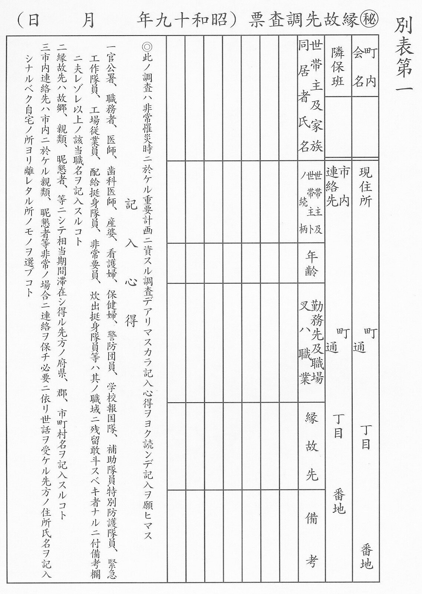

資料編の目次へ
別表第三
防空要員残留者
官公署，職務者，医師，歯科医師，産婆，看護婦，保健婦，
警防団員，学校報国隊，補助隊員，特別防護団員，緊急工作隊員，
工場従業員，配給挺身隊，非常要員，炊出挺身隊員，
別表第四
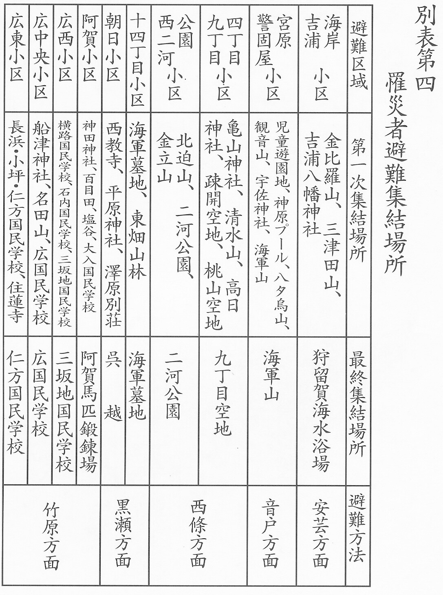
資料編の目次へ
別表第五
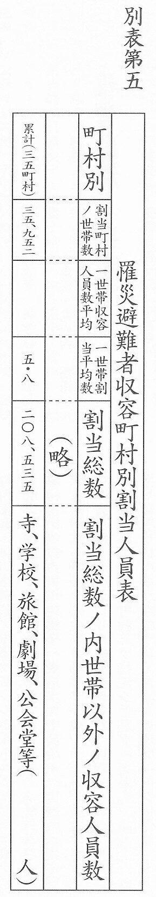
別表第六
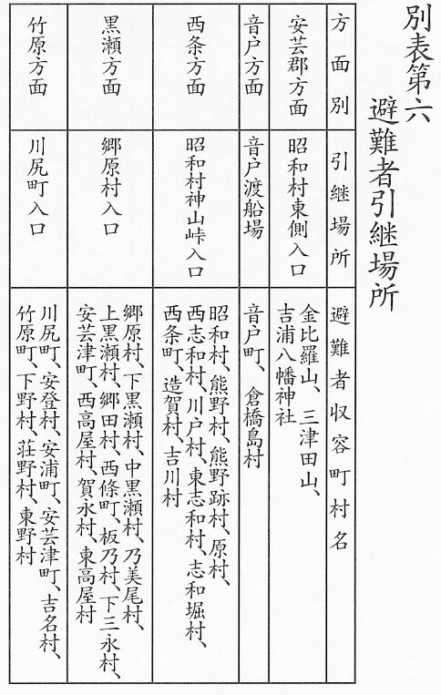
資料編の目次へ
別表第七
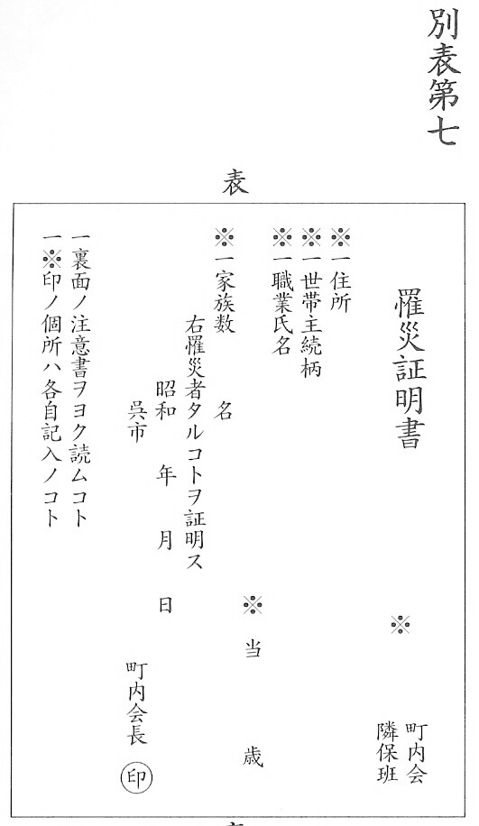
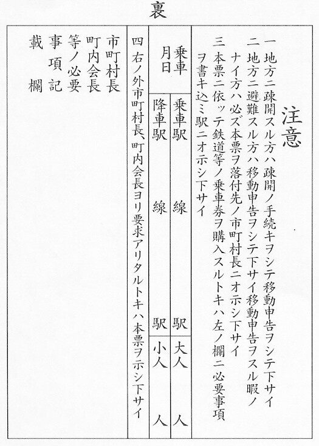
別表第八

別表第九
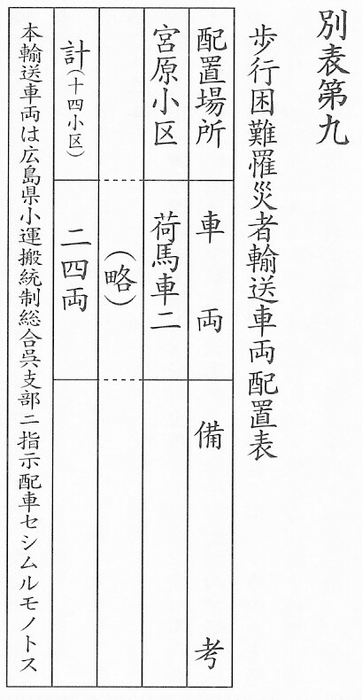
資料編の目次へ
II.全般的な報告書
（出典）米国戦略爆撃調査団報告（国立国会図書館蔵）
昭和二十年十二月二十日、東京・丸の内、明治ビルにて提出。
報告提出義務者は 広島県知事 楠瀬 常猪
報告書の実際作成者は 広島県属 目見田 武市
資料の提出者は 呉市長
（注 各部署．呉警察署及び廣警察署等から個別に報告をさせた
資料をそのまま提出したようです。）
無題の報告書 （縦書きで手書き）
援護課
一．事前ニ於ケル援護計画
１．避難
一般的ニハ町内会ノ自治的統制下ノ下ニ最寄ノ縁故先ヘノ避難ト町
内家庭ヘノ割込避難ノ方法ヲ執ラシムルト共ニ状況ニ依リテ緊急的ニ
集団避難ヲ為サシムル事トシ市内ノ学校．病院．神社公園等相当ノ収
容力アル建物又ハ空地ヲ九十箇所余リ避難所ニ指定シテ居タ。又全市
的ナ大被害ノ場合ヲ予想シテ市外ニ適当ナ縁故先アル者ハ別トシテ然
ラザル者ハ全部市外ヘ避難セシムベク町内会ニ避難道路．避難先町村
等ヲ指定シテ居タ。避難先ニ依ッテハ鉄道モ利用サレル事ガ考慮サレ
又老幼病者運搬用トシテ少数ノトラック大八車等ガ動員準備サレテ居
タ。
避難ハスベテ無用ノ混乱防止ノ為ニ警察署長ノ指示ト警防団ノ誘導ノ
下ニ実施サレ統率ヲ乱スガ如キ恣意的行動ハ厳禁サレテ居タ。
２．炊出
原則的ニ市職員ガ避難者ノ集合場所ニ出張シテ指揮ヲ執リ町内会ノ
協力ノ下ニ炊出ヲ行フ事ニシテ居タ。器具ハ付近町内ノ保有品ヲ利用
スル事ヲ原則ニシテ居タガ万一ノ場合ニ備ヘテ市内九十箇所余リノ避
難所ニ夫々少クトモ五百人分ノ炊出ガ可能ナ程度ノ器具ヲ配置シテ居
タ。其ノ配置数ハ一箇所平均．水桶二荷．バケツ十荷．柄杓十本．大
杓子一本．小杓子二十五本．包丁二本位デアル。但シ大釜ハ整備不能
ノ為学校ノ湯沸シ用大釜又ハ町内ノ保有品ヲ利用スル以外ニ方法ハナ
カッタノデアル。又要員ハ町内会毎ニ各隣保班カラ一人宛選定シタ婦
人ニ依リ炊出奉仕隊ヲ組織サセ市職員ガ要求スレバ直チニ大釜．バケ
ツ等ノ器具ヲ携帯シテ出動スベキ態勢ヲ整ヘテ居タ。又大被害ノ場合
モ考慮シテ警察デモ全市ニ飲食店組合員ヲ以テ炊爨挺身隊ヲ組織シ市
ノ要請ニ応ジテ協力スベキ用意ガ出来テ居タ。
次ニ米穀．塩．梅干．漬物等ノ物資ハ県当局ノ手配ニ依リ相当量ガ常
ニ備蓄サレ市職員ガ警察署長ニ申告スレバ何時デモ必要量ノ非常配給
ヲ受ケ得ル事ニ成ッテ居リ各配給所ニハ従業員ヲ以テ配給挺身隊ガ組
織サレ配達業務ノ正確敏速ヲ期シテ居タ。
３．応急救助用寝具．被服．生活必需品ノ調達
諸物資不足ト強力ナ統制ノ為之等ノ調達ハ不可能ニ近イ問題デアッ
タ。又県当局ヲ打診シテモ必要ナ物資ハ或ル安全ナ場所ニ分散備蓄シ
テアルトノミノ回答ノミデ品目．数量．備蓄場所．運搬方法等一切公
表サレズ従ッテ之等ノ物資ノ万一ノ際ノ利用又ハ配給ノ計画ハ全ク策
定ノ途ガ無カッタノデアル。
依ッテ市ガ単独ニ市民ヨリ座布団改造ノ寝具．衣類．生活必需品ノ無
償供出ヲ求メ応急救助用ニ利用スベク之ヲ適当ナ学校ヘ分散的ニ備蓄
シテ居タノデアル。
二．実際ノ援護活動
１．避難
大火災ガ発生シ全市一帯ガ火ノ海トナルヤ生命ノ危険ニ曝サレタ市
民ハ各自ニ安全ナ場所ヲ求メテ分散シ多クハ周囲ノ山ノ中ヘ避難シタ
ガ全市ガ鎮火シ夜明ヲ迎ヘテ心ノ冷静ヲ取戻スト共ニ朝食ヲ求メテ寄
集マリ自然ニ町内会単位ニ集合シタ。既ニ大部分ノ避難所ハ消失シテ
居リ又次ノ空襲ヲ予想サレルノデ之等ノ戦災者ハ自然ニ安全ナ横穴防
空壕等ヘ起居スル様ニ成ッタ。其ノ過半数ハ間モナク思ヒ思ヒニ市外
ノ縁故先ヲ頼ッテ立退イタガ残留者ハ依然トシテ横穴防空壕ニ起居シ
タリ或ハ自ラ焼跡ニ仮小屋ヲ建設シタリシタ。
２．炊出
大火災発生ノ情報ト共ニ県当局ガ手配シテ隣接市町村デ炊出ガ行ハ
レ夜明ト共ニ握飯ヤ乾パン等ガトラックニ依ッテ続々ト市ニ到着シ又
海軍当局カラモ炊出ガ行ハレタノデ戦災者ハ食料上ニハ何ラノ不安モ
感ジナカッタ様子デアル。市デハ之等ノ握飯ヤ乾パンヲ町内会単位ニ
給与シタ。給与ハ二日間行ハレタガ其ノ間ニ米穀ノ仮配給所モ設立サ
レ爾後ハ普通ノ配給ニ復帰シタ。
３．応急救助用寝具．被服．生活必需品
市民供出ノ備蓄寝具．被服．生活必需品中消失ヲ免レタモノ寝具千
六百枚．被服．生活必需品若干ヲ貸与又ハ給与シタニスギナイ。
資料編の目次へ
III. 防空対策
（出典）米国戦略爆撃調査団報告（国立国会図書館蔵）
（タイプ横書き）
（注 アメリカ軍の質問に答える形で、統計と実態の報告がされて
いる。回答は手書き。）
Ａ．防火ノ為ノ家屋疎開
1.防火ノ為メ取リ壊サレタル家屋総数 ６、０５１戸
2.右取リ壊シ家屋ニ居住シ居タル人員数 ２４、２０４人
3.右ニヨル立退者ノ収容対策（手配）（下ニ簡単ニ記スベシ）
本市住民ニハ外来者多ク呉市ニ居住ノ要少キ者ニ対シテハ市外転出
ヲ勧奨セシ所夫々自己ノ郷里等ニ保故疎開セリ。叉、県下ニ於ケル空
家ヲ調査シ之ヲ疎開者ニ指示シ之ニ拠ラシメタル者若干アリ。市ハ之
等疎開者ニ対シテハ市長ヨリ疎開先町村長宛住家、就職等斡旋方依頼
ノ添書ヲナセリ。市内ニ要居住者ニ対シテハ予メ調査シ置キタル空家、
空間ニ市、警察、賃家組合ノ斡旋ニヨリ移住セシム。
4.右ニ対スルウ保障方策（実施）（下ニ簡単ニ記スベシ）
実地ニツキ物件ノ評価並ニ営業状況、居住人口等ヲ厳密ニ調査シ保
障委員会ニ於ケル保障決定額並ニ移転費等ヲ支払ヘリ。
（*別報告書ニ、「県ヨリ立退者ニ手当１人当リ200円位支払」ノ記
事アリ）
Ｂ．空襲待避壕
1.下記各種ノ待避所ニ収容シ得ル人員ノ百分比
（ソノ収容ヲ目的トセラレ居レル総人員ニ対スル）
ヲ示スベシ
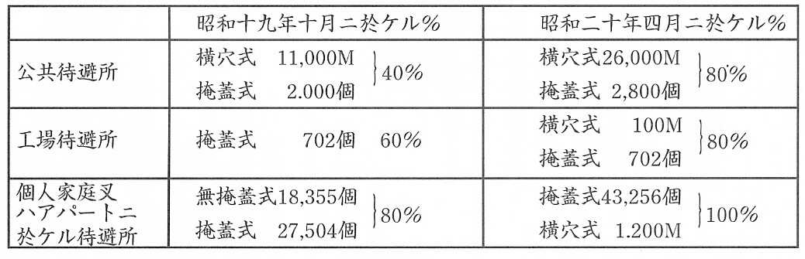
Ｃ.人員疎開
貴地域ヨリノ疎開者数ヲ記入スベシ（但シ同一都市町村内ニ於ケル
異動者ヲ除ク）
月 次 疎 開 者 数
第一次 昭和十九年五月 １２、０００
第二次 昭和十九年十二月 ４、５００
第三次 昭和二十年三月 １７、４００
下記ニツキテモ記載スベシ
強制疎開者ノ割合ハ如何 ５５％
任意疎開者ノ割合ハ如何 ４５％
疎開者ノ種類ハ如何 非防空従事者
以上ノ外昭和二十年七月二日戦災者ニシテ約十万人余
疎開セシモノアリタルモ混雑時ニテ詳カナラズ、然レ雖現在
人口数ヨリ考慮スルニ相当数復帰セシモノアレ共約五万人
程ノ罹災疎開セシ模様ナリ
Ｄ．警 戒 体 系
１．警戒警報
昼間攻撃ノ場合、予期セラレタ空襲ノドノ位前ニ（ドノ位間隔
時間ヲ置イテ）警戒警報ハ通常発セラレテ居タカ。
夜間攻撃ノ場合警戒警報ハ予期セラレタ空襲ノドノ位前ニ通常発
セラレテ居タカ 約１０分乃至４０分前 （夜間約６分前）
ソノ間隔時間ハ通常大多数ノ一般人ガ空襲ニ対スル準備ヲ整ヘル
ニ十分デアッタカ説明アリタシ 昼間ノ場合ハ概ネ充分ナリ
シモ夜間ノ場合、準備整フル時間ナク大ナル被害ヲ生ジタリ
上記ノ間隔ハ戦時中ニ変更セラレタル事アリヤ
若シアラバソノ変更ハ 何時 如何ニ 何故ニナリヤ
警報発令ニ予期セラレタル時ヨリ何分前ニ警報発令スル
等一定セシコトナク従ツテ変更セシコトナシ海軍イ発令
ニ依リタルノミ
（注 別報告書に「警察ノ発令ハ軍部ヨリ入電スルモ不正確ニシ
テラジオ放送ヲ主トシタリ」の記載があります。）
２． 空襲警報
昼間攻撃ノ場合警戒警報ハ予期セラレタ空襲ノドノ位前ニ発セ
ラレテ居タカ 約 １０ 分前
夜間攻撃ノ場合警戒警報ハ予期セラレタ空襲ノドノ位前ニ発セ
ラレテ居タカ 約 ５ 分前
資料編の目次へ
二 被害調査と援護活動
（出典）米国戦略爆撃調査団報告（国立国会図書館蔵）
（タイプ横書き）
Ａ．空襲後ノ手配
１．宿舎割当テ
空襲後ノ応急宿舎割当テ手配ニツキ簡単ニ記述セヨ
縁故者知人ヲ頼ツテ同居叉ハ市外ヘ疎開セルモ縁辺ナキ者ハ
焼残リ隣接町内会ノ一般民家ヘ収容セリ其ノ他海軍ヨリ大天幕
ヲ借リ利用セリ
割当テ宿舎施設ハ十分ナリシヤ否ヤ（数及質ニ於テ）説明セヨ
何レモ一時凌ギニテ満足ナル状態ニアラズ（終戦後海軍ヨリ
バラック １.４４０戸ノ譲渡ヲ受ケ戦災者ニ貸与叉ハ譲渡ノ
方法ヲトッタ）
Ｂ.別記 (海軍用紙デ広地区？ノ報告 手書き）
１．空襲後ノ応急給食ノタメ採ラレタル手段ヲ簡単ニ記述ス可シ
答（１）昭和２０年３月１９日
罹災人員約４００名、罹災地付近縁故者知人等ノ家ニ入居セ
シメ之ニ対シ午後ノ主食其ノ他食料品ヲ配給ス
昭和２０年５月５日
罹災人員約１.５００名 広町字末広 向新開２ｹ所ノ食料営団
食堂ニ於テ広町町内会隣保班ヨリ一回約４０名程度ヲ輪番制
ニ出動奉仕セシメ二日間炊出シヲナシ握飯ヲ配給ス
昭和２０年７月イ日
同上同様２ｹ所ヲ利用シ３日間ノ炊出ヲナシ握飯ヲ配給ス
２．給食ハ十分ナリシヤ否ヤ（量及質ニ於テ）
答（２）呉市空襲時ニ於ケル食糧及薪炭一般配給要綱ニ基キテ実施
セルガ一食分握飯重量７０匁一個ニシテ量並質ニ於テ充分トハ
言ヒ難ク稍可ナリ
３.特配アリヤ
答（３）三月空襲ニ対シテハ成年者ニ対シテハ清酒一合宛ノ配給ヲ
ナシタリ 五月五日空襲ニ対シテハ罹災地ニ対シ蔬菜ノ配給ヲ
ナシタリ ７月１日空襲ニ対シテハ缶詰類ノ特配ヲナシタリ
其ノ他呉市ニ於テ其午罹災者一般ニ対シ生活必物資（塩.醤油.
燐寸.石鹸．塵紙.其ノ他）ヲ特配セリ
４．何人ガ応急給食施設ニツイテノ責任者ナリヤ
答（４）施設ハ空襲直後５日間ハ管下警察署長ニシテ其午ハ罹災地
市町村長ガ給食責任者ナリ
資料編の目次へ
三 各種統計資料
（出典）米国戦略爆撃調査団報告（国立国会図書館蔵）
（手書きで、横書き）（以下同じ）
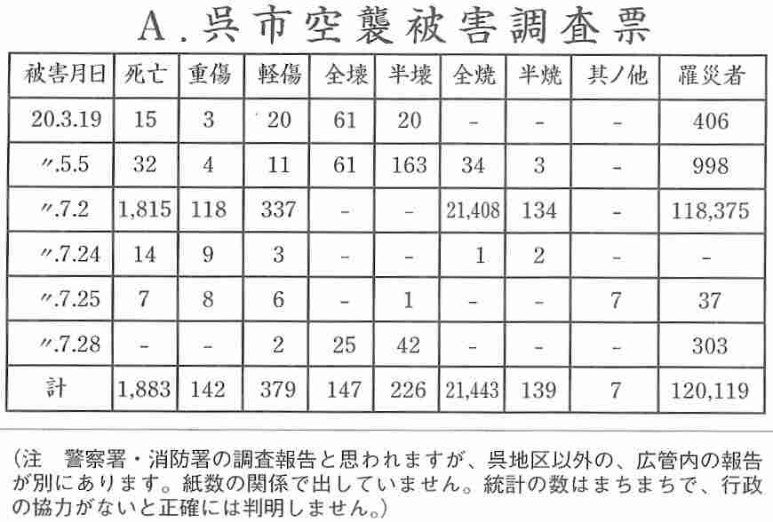
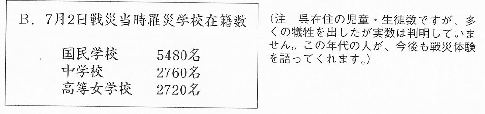
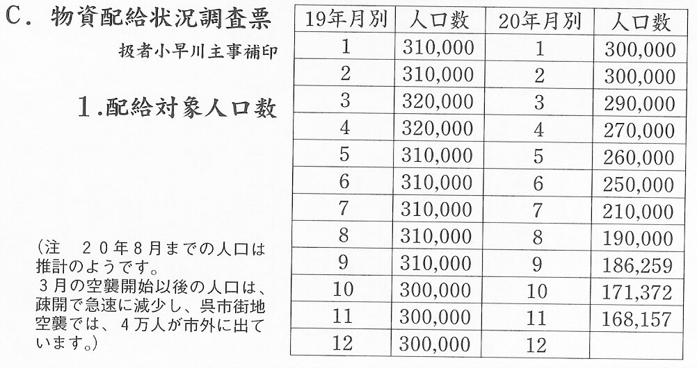
資料編の目次へ
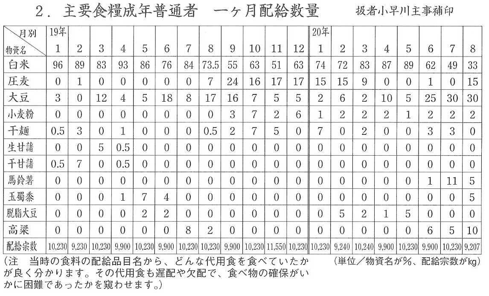
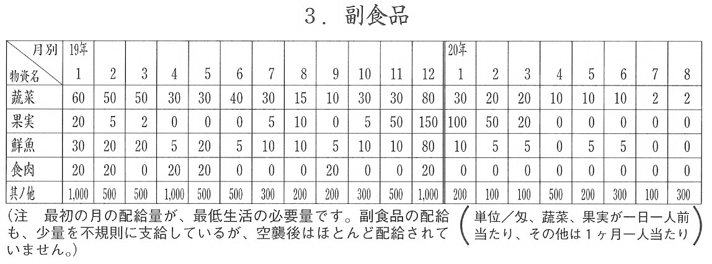
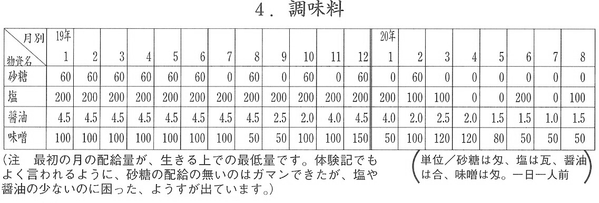
資料編の目次へ
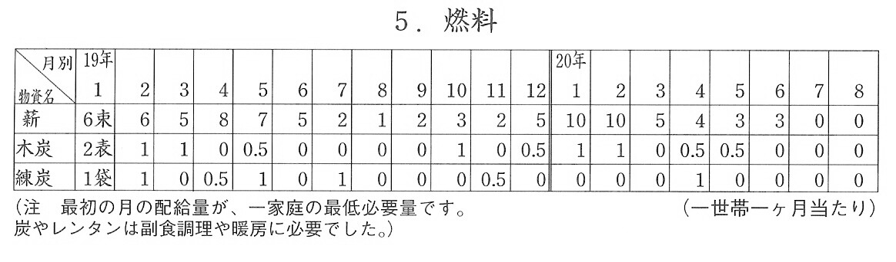
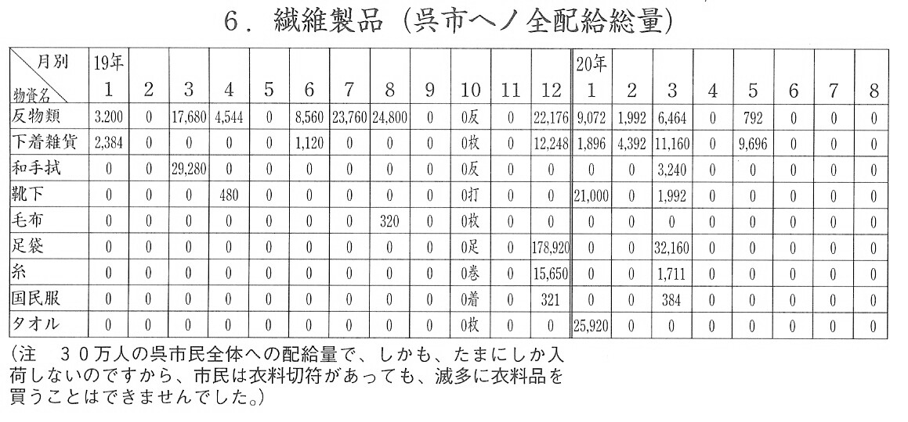
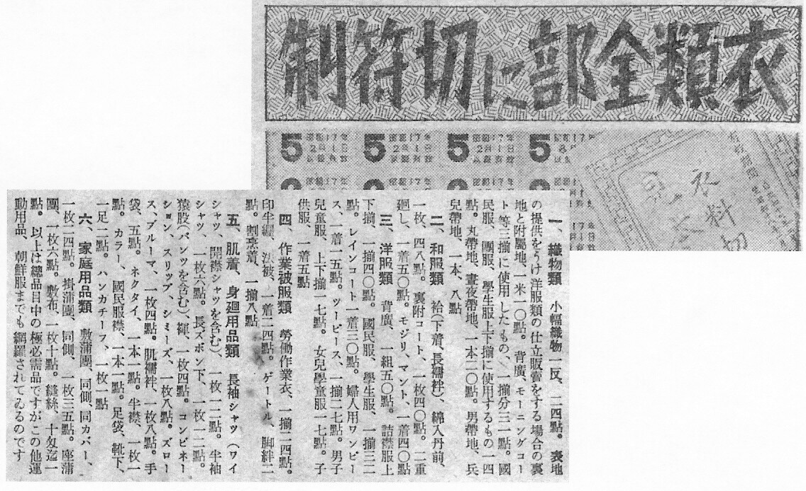
資料編の目次へ
Ｄ．爆撃被害
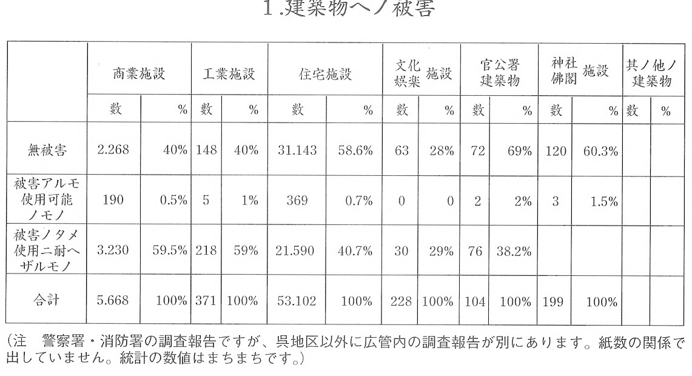
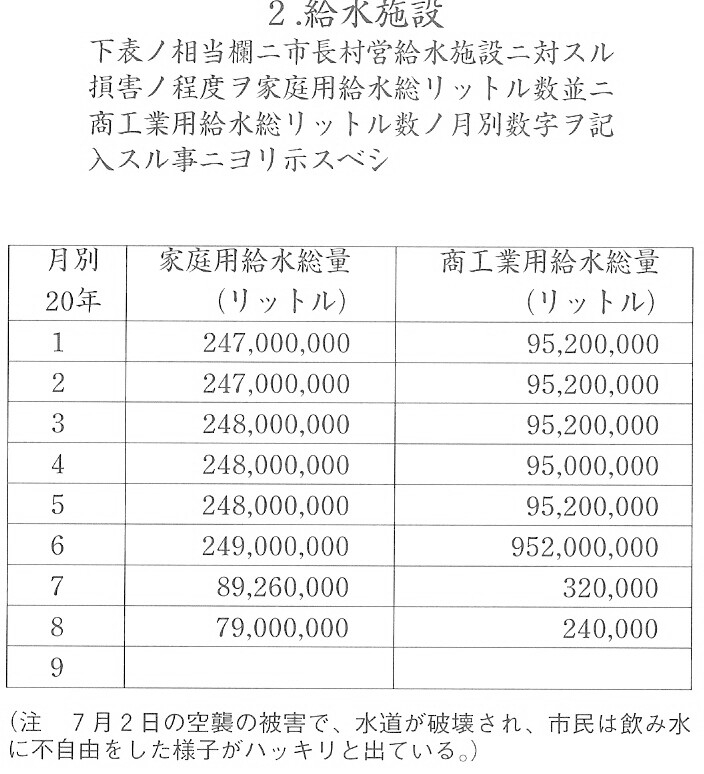
資料編の目次へ
３．戦災水道被害状況調書 （手書きで縦書き）
呉市水道部
戦災状況
戦災前後ノ状況（概数）
本市ハ東北西ノ三方山ヲ以テ囲マレ南面シテ暮れ軍港ニ望ム地勢摺鉢
状ニシテ其他地帯タル市ノ中心街ヲ焼爆サレ殆ンド大部ノ給水家屋ヲ
焼失セリ
サレバ残存家屋ハ高地帯ノミナルヲ以テ戦災後ニ於ケル給水状況ハ引
込給水管ノ故障ノタメ漏水甚ダシク此ノ為圧力低下ヲ来タシ前表ノ如
ク給水戸数ハ俄カニ「二七パーセント」ニ減ジタルモ給水量ニ於テハ
「七一パーセント」ヲ要シ且ツ一部ハ給水不能ノ状態ニテ之ガ復旧ニ
多大ノ困難ヲ極メ・・・後略・・・
（注 呉市の被災状況を、警察や消防署以外の別の統計で示した、か
なり正確な被害統計です。空襲ごとの被害状況を報告していますが、
割愛しました。）
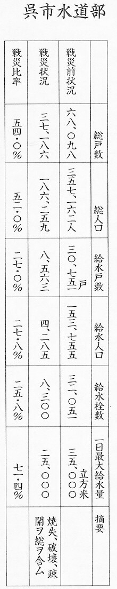
資料編の目次へ
４．電気事業被災状況
呉電業局（手書きで横書き）
空襲日時 ７月２日 自０００５ 至０２３０
場 所 呉 市
大挙殺到セルＢ２９ヨリ投下セル焼夷弾ニ依リ市街ハ
忽チ猛炎ニ包マレ終ニ周辺高地ヲ残シ焦土ト化シタタリ
呉変電所亦数十発ノ焼夷筒落下、清水通、公園通、両変電
所及呉電業局事務所モ数発ノ焼夷弾落下シタルモ、
各職員ノ挺身敢闘ニ依リ殆ド被害ナク、為ニ爾後ノ復旧
作業ノ進捗著シク、２日夕刻ニハ早クモ広島ヨリ受電シ、
３日夕刻ニハ市内重要ケ所及近接町村ニ配電シ得タリ。
損害 電気関係ハ下記ノ如シ
家屋喪失 ２１５３０戸
電灯配線焼失 ５４６２０件
電力 ” ” ５８２０”
電柱 ” ” １１８０本
電線 ” ” ２９７ｋｍ
柱上変圧器” ６７０ケ
油入開閉器” ９５ケ
（注 呉市の被災状況を、警察や消防署以外の別の統計で示した、か
なり正確な被害統計です。空襲ごとの被害状況を報告していますが、
割愛しました。）
資料編の目次へ
四 呉市議会ヘノ報告議案書 （昭和二十年度末議会）
（出典）呉市史編纂室蔵
援護課
戦災者援護ニ関スル事項
１．高松宮殿下御成
恩賜財団戦災援護会総裁高松宮殿下ニハ広島市ノ原子爆弾ニ依ル被
害状況御視察ノ途次十二月十二日本市ニ御成リ遊サレ被害状況並ニ援
護活動ヲ御視察アラセラレタリ
２．空襲被害状況
本市ハ三月十九日初メテ米軍ノ爆撃ヲ受ケテ以来屡次ニ亘リ焼爆撃
ヲ受けケタリ 特ニ七月二日ノ焼夷弾攻撃ハ最モ激烈ヲ極メ市ノ中心
部ハ一夜ニシテ焼野原ト化シタリ

資料編の目次へ
３．応急救助
三月十九日．五月五日．六月二十日ノ戦災ニ際シ夫々避難炊出等応
急救助ノ処置ヲ講ジタリ 特ニ七月二日ノ戦災ニハ拾弐萬五千人ニ及
ブ多数ノ戦災者発生シタルモ海軍及県当局並ニ隣接市町村等軍官民ノ
協力ニ依リ避難炊出等ノ万全ヲ期シ握飯乾麺麭ヲ準備シテ食料不安ヲ
完全ニ除去シ得タルモ諸物資ノ極端ナル枯渇ノ為寝具衣類等生活必需
品ノ給与等ニ就テハ焼失ヲ免レタル市民供出ノ備蓄寝具等ノ貸出ヲ行
フト共ニ軍需品ノ払下ニ依リ大量ノ衣料ヲ応急的ニ配分スルヲ得タリ
4.戦災者物資配給其他給与状況
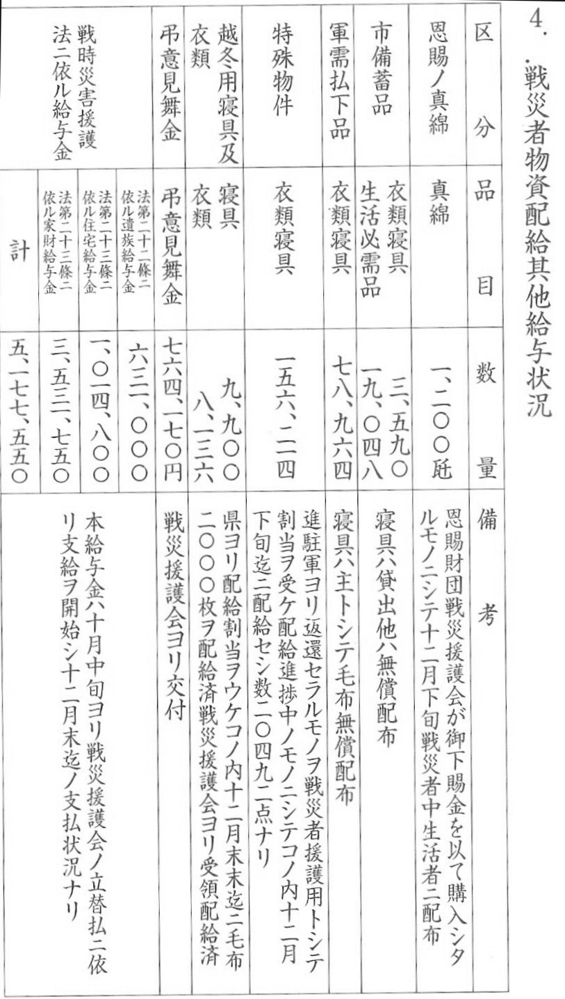
資料編の目次へ
五 アメリカ軍の呉空襲記録
米国戦略爆撃調査団報告
（国立国会図書館蔵 神垣惟秀 訳）
１．海軍工廠造船部門の空襲被害
造船部門の空襲被害はきわめて小さく、造船の能力にはなんら影響を
与えなかった．
被害の詳細は次の如し．
（1）横須賀
機械工場の一つで機械の損壊があった．
（2）呉
第１回攻撃：第２バースにあるガントリー・クレーンの
ランウエイ・ガーダー、
第１第２バース乾ドックの低部、ならびに亜鉛メッキ工場の
一部に軽度の被害があった．
第２回攻撃：人命被害若干のみ．
第３攻撃：現図場の一つ、ならびに木工所が焼失した．
（3）佐世保
機械工場、ならびに亜鉛メッキ工場が１部破壊され、
船舶工場が焼失した．
製造工場の生産力への影響は極めて軽微であった．
（4）舞鶴
皆無。
（5）大湊
乾ドックの一部が損壊したが、ドックの能力は間もなく回復した．
（呉戦災を記録する会 注 日本の海軍軍港の港湾施設、造船部門の
爆撃はあまり行われなかった。艦船への攻撃中の一部として局部的に
行われた。戦後、アメリカが使用するためだったと言われています。）
２．目標情報シートおよび任務概要
（（呉戦災を記録する会 注
１、アメリカは日本に対して空襲を行う際、日本全土を地図上で分割
し、番号を付けて、その番号で位置を明示していました。
九〇は日本を示す番号で、北から順に区分番号を付け、ＫＵＲＥは三
〇なので、呉地区（大竹ー広島ー呉・広）の区分番号は、九〇・三〇
となります。
２、アメリカ軍が作戦で使用した写真
アメリカ軍が爆撃に使用した写真は、リト・モザイク（石版集成図）
と言う合成写真です。
何回かの偵察飛行で、偵察写真を撮り、それを合成して、攻撃目標地
点を中心にした精密写真を作り、目盛を付けてレーダー爆撃を行い、
また、有視界爆撃も行いました。
写真周辺の目盛りは、レーダー爆撃の照準点を定めるための座標です。
Ａ 広第十一空廠爆撃の照準点・・・一〇七（横軸）〇六九（縦軸）
Ｂ 呉海軍工廠爆撃の照準点・・・・〇三七（横軸）〇五五（縦軸）
Ｃ 呉市街地爆撃の照準点・・・・・〇五一（横軸）〇八八（縦軸）
（呉市街の爆撃中心点は、東泉場町・現在の栄町商店街南辺り）
休山南西部から中心点に向けて攻撃線が示されている。））
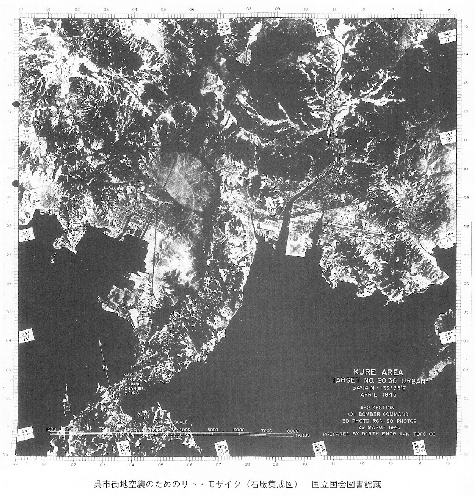
資料編の目次へ
Ａ 攻撃目標情シート （広海軍航空機工場）
機密
戦闘任務に際し
機中に
持ち込まないこと
攻撃目標：９０.３０ー６６０
目標区域：９０.３０ー呉
攻 撃 目 標 情 報 シ ー ト
攻撃目標：９０.３０ー６６０
広 海 軍 航 空 機 工 場
緯度： 36°13' N
経度： 132°37' E
海抜： 10 フィート
１．位置と確認：
当工場は広町の南南西約２０００ヤード、呉の南西約３1/4マイルの
位置にある．また黒瀬川（広湾に二つに分かれて注ぐ）の東側の支流
に面している．呉海軍飛行場（攻撃目標９０.３０ー６５６)は当工場の
約２１００フィート西、黒瀬川の二つの河口の中間点にある．
２．工場について：
工場は南北の最大距離７５０フィート、東西の最大距離５００フィー
トの不規則な形をした土地にある．地表総面積は3,595,000平方フィー
ト．そのうち 1,093,000平方フィート、つまり３０.５％を建造物が
占めている．工場の建造物３８棟、ならびに格納庫型試験室１５の存
在はエンジンの生産及び大規模な整備、修理が行われていることをう
かがわせる．
航空写真を分析した結果、工場の南半分は（この部分にエンジン
の試験室がありはするが、）主として航空機の修理に当てられている
ようである．工場の北半分には新しい機体・エンジン工場があると思
われる． 北部にある３階の大型建造物は、恐らく、新型エンジンの
生産に使用されている．200,000平方フィート以上の床面積が新型エ
ンジンの生産に、約350,000平方フィートが新型機体の製造に、そし
て残りの部分が修理に当てられている様子である．
３．重要性：
機体ならびに航空エンジンが当工場で生産・修理されている．現在製
造中のものは、急降下／雷撃機Ｊｕｄｙと新型高出力中島型エンジン、
Ｈｏｍａｒ２１号である． 当工場で製造されたものには ４発飛行
艇 Ｅｍｉｌｙ, 単発フロート水上機 Ｊａｋｅ, 単発爆撃機 Ｋａｔｅ、
エンジンのｋａｓｓｅｉ １１, ｋａｓｓｅｉ １５ ならびにｋａｓｓｅ
ｉ４５各型などがあるが、現在、もはや製造はされていないと信じら
れる．
単発爆撃機 Ｖａｌならびに、ＥｍｉｌｙとＭａｖｉｓの両機がここ
で修理を受けたことが知られている．
攻撃目標部門、Ａー２
第２０航空軍
１９４５年９月７日
機密
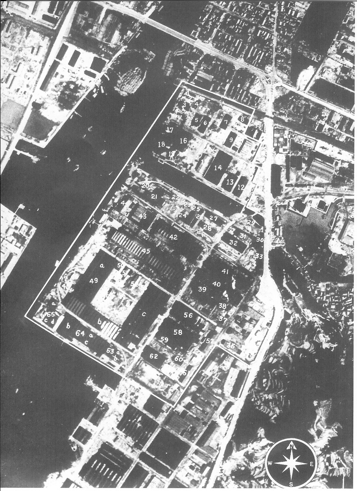
資料編の目次へ
Ｂ 攻撃任務概要 （広地区）
機密
攻 撃 任 務 概 要
任務番号 １４６
１．日付： １９４５年５月５日
２．コード名：Thunderhead(入道雲）＃１
３．攻撃目標：広海軍航空機工場（第1有視界攻撃）（90.30 -
660)
広造兵廠（第1レーダー攻撃）（90.30 - 794)
４．参加部隊：第73ならびに第58航空団
５．飛行航空機数： １７０機
６．航空機第１攻撃％：85.04％（第１攻撃148機、好機攻撃4機）
７．第1攻撃所要時間：051140k - 051211k
８．攻撃高度：18,000 - 24,700
９．攻撃目標上空の天候：晴れ - 3/10
１０．損失機数総計 : ２ 機
１１．任務摘要： 爆撃の成果は良ないし秀．
攻撃目標西半分の主要建造物は直撃弾を受けた．
広海軍発動機・タービン工場のＵ型大建造物への直撃弾．
広造兵廠南西部の主要建造物も直撃弾を受けた．
攻撃目標の８０％が破壊されたものと判断される．
攻撃目標地帯南端の水上機格納庫を除き、すべての建造物は破壊また
は内部焼失をした．
攻撃目標に投下された爆弾は５７８トン．
航空機18機は戦闘力がなかった．
迎撃敵機は５６機が認められ１６回の攻撃があった．
破壊敵機数３機、うち２機は破壊、１機は損壊と思われる
対空砲火は激しく、中から強程度。その正確度は 低きものより高き
ものに及ぶ。
６８機が硫黄島に着陸した．
搭載爆弾平均：8245ポンド 補助燃料平均：572ガロン
＜訳者注：各建造物の寸法、面積表付き＞
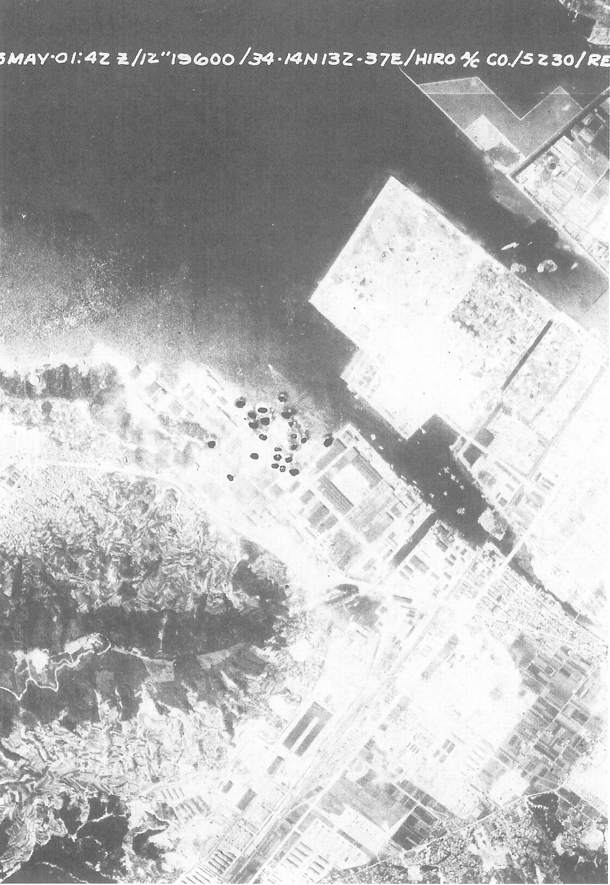
資料編の目次へ
Ｃ 攻撃目標情報シート （呉市街工業地帯）
機密
戦闘任務に際し
機中に
持ち込まないこと
攻撃目標：呉市街工業地帯
目標地区：９０.３０ー 呉
攻 撃 目 標 情 報 シ ー ト
呉 市 街 工 業 地 帯
緯度： 34° 14' N
経度： 132° 34' E
海抜： 平均海面
１．概要：呉は瀬戸内海重要攻撃目標集中地帯の一つである．攻撃目
標はすべて大呉海軍基地の一部であるか、それと関係を有するもので
ある。過去一年の我が方の海軍力の勝利の結果、日本軍艦隊の残存せ
るものの主要部分が呉湾に避難したと信じられる。呉地域は日本最大
の艦隊建造ならびに維持基地である。
２．位置ならびに確認：四国西端の真北に本州南西部最大の湾の一つ、
広島湾がある．広島湾の東南端、広島市の東南15マイルに呉市は位置
する．呉は小さな谷間に円形劇場状の場所を占めている．三方を高い
山に囲まれ、西南が呉港と接する．平地が少ないことと、市が急速に
発展したために、市の中心部近くの狭い谷々に小集落が発達し、また
周囲の山の低傾斜部が住宅に利用されるにいたった．サカイ川とニコ
ウ川が市街を北東より西南に流れており、市の中心部に数多くの狭い
水路がある．
3. 攻撃目標について：１９４０年の報告によれば、呉の人口は２３
８、０００人以上で、その大部分は約2.5平方マイル内に集中している。
人工密度は１平方マイル、７０,０００人以上と推定される。
家屋の大部分一階ないし二階で、木造またはプラスター構造である。
どこでも見られるような押し合いへし合い状で、密集している。
数少ない大型商業用建造物が市の南西部にある一本の大通りに沿って
位置している。
市内は二つの防火地帯が表示されている（最終ページに参照スケッチ
地図あり）．第一地帯は最も無防備な部分であり、旧市内の約1.5平方
マイルを占める．それはもっぱら住宅地区である．無数の水路、流水
はあるが、防火帯として役にたつ巾があるのはサカイ川下流のみであ
る．市街地の道路幅はせまく、３０～４０フィートを越えるもは少し
しかない．
第二地帯は、道路の幅がより広いこと、人口密度がより低いこと、建
造物のタイプの違いなどのため、いくらか攻撃に強い．この地帯は海
軍基地の東側、北東ならびに北側に延びている．南部は主として住宅
からなり、北東部は海軍補給倉庫から成り立っている．北部は呉市の
より新しい部分であり、他地区に比べ防火設備に優れる．
同一規模の日本の大部分の都市とは異なり、旧市内には小規模工場が
比較的少数しかない。ほとんどの工場はＬ字型海岸に沿って延びる呉
大海軍基地の一部である．
4．重要性：呉海軍基地は日本最大の艦隊の建造ならびに整備基地で
ある。最近数カ月間に日本の艦隊は決定的な打撃を受けた．修理・整
備をするために、呉基地が労働過重に陥っていることは疑いの余地が
ない．呉海軍基地内の造兵廠は４０ミリ、１２０ミリ、１００ミリ砲
を含む海軍高射砲の最大の製造工場である．旧市内は密集地帯に若干
の小規模な製造工業を有するが、むしろ呉海軍基地従業員用住宅供給
地として、より大きな重要性があると思われる．
防火地帯内攻撃目標一覧は次のごとし
第一地帯
ガス施設
管理建築物
第二地帯
９０・３０ー６５７B -呉海軍造船所
９０・３０ー６５７C -水雷艇基地 ならびに 機雷庫
９０・３０ー６５７D -糧食・衣服庫
９０・３０ー７９８ -呉駅
防火地帯外ただし市街からから２マイル内の攻撃目標一覧は次のごと
し
９０・３０ー６５７A - 呉海軍造兵廠
９０・３０ー６５８ - 呉潜水艦基地
かっては日本人の誇りであり喜びでもあった帝国艦隊はすでに再
起不能の打撃を受けている． しかしながら、国民は検閲により、その
損失の事実を知らされて来なかった． 日本の大海軍基地の施設、生産
力あるいは生産資材は壊滅状態である．このことから、日本国民は彼
らの国土の守護者が急速に神話となりつつあることをはっきりと認識
できるようになるかも知れない。対空砲火という点から考えるとき、
造兵廠を破壊し、または損害を与えることにより、我々の今後の空中
軍事作戦はより犠牲の少ないものになるであろう。
攻撃目標部門、A- 2
第２１爆撃機司令部
1945年６月29日
機密
資料編の目次へ
Ｄ 攻撃任務概要 （呉海軍工廠）
機密
攻 撃 任 務 概 要
攻撃任務 215 １９４５年７月1日
１．日付：１９４５年６月２２日
２．攻撃目標：呉海軍造兵廠 （９０.３０ー６５７Ａ)
３．参加部隊：第５８・第７３航空団
４．飛行航空機数：１９５機
５．第１空爆％：82.62% (第１爆撃１６２機, 好機爆撃１２機）
６．使用爆弾・信管の種類：AN -M65, 1000# G.P. 1/10秒
ならびに1/40秒遅延弾頭、1/40
秒遅延尾部；AN -M64, 500# G.P.,
1/40秒遅延弾頭ならびに尾部；
AN -M66, 2000# G.P.,
1/40秒遅延弾頭ならびに尾部
７．投下爆弾トン数：第１爆撃で795.8トン、好機爆撃で65.5トン
８．第１爆撃所要時間：1031K ー 1143K
９．攻撃高度：18,000 ー 26,250 フィート
１０．攻撃目標上空の天気：2/10 - 3/10
１１．損失機数総計：2機
１２．攻撃任務概要：攻撃目標空爆５編隊中３編隊の写真撮影によれ
ば南西地帯に多く命中をした．投下爆弾の57％が攻撃目標に命中した．
１３５機が有視界爆撃をし、２７機がレーダー爆撃を行った．敵機を
２０機認めるも、攻撃はしてこなかった．対空砲火は激しく、強烈か
つ正確であった．高角砲火もかなり見られた．損失B29 (２機)のうち
１機は対空砲火の命中によるもので,他の１機はエンジン２基の停止の
ため、コブラ-飛行場に着陸しようとして失敗したものである. 対空砲
火により９６機が損害を受けた．B29、２０機は戦闘力がなかった．
航空機１０機が硫黄島に着陸した．
搭載爆弾平均：10,460ポンド 補助燃料平均：848ガロン
機密

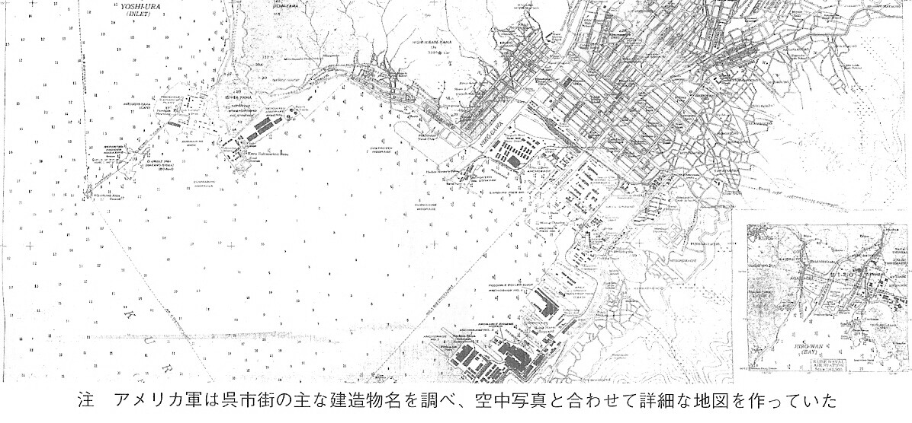
資料編の目次へ
Ｅ 攻撃任務概要 （呉市街）
機 密
攻 撃 任 務 概 要
攻撃任務 240 １９４５年７月７日
１．日付：１９４５年７月１日
２．攻撃目標：呉市街区域
３．参加部隊：第５８航空団
４．飛行航空機数：１６０機
５．第１空爆％：94.24% (第１爆撃 １５２, 好機爆撃２機）
６．使用爆弾・信管の種類：E46, 500#
攻撃目標５,０００フィート上空で炸裂するようにセットした
焼夷集束弾ならびにAN-M47A2,100# 瞬間弾頭つき焼夷弾
７．投下爆弾トン数：第１爆撃で1081.7トン、好機爆撃で14.3トン
８．第１爆撃所要時間：0102K ー 0305K
９．攻撃高度：10,300ー11,800 フィート
１０．攻撃目標上空の天気：6/10ー8/10
１１．損失機数総計：０機
１２．攻撃任務概要：写真偵察によれば市街地の４６%が破壊された．
１２０機がレーダーで爆撃をし、３２機が有視界爆撃をした．
６機は戦闘力がなかった．対空砲火は不十分にして不正確で
あった．対空砲火により１機が損壊を受けた．
敵機を3機認めるも、攻撃はなかった． 被害なし．
航空機１６機が硫黄島に着陸した．
搭載爆弾平均：14,869ポンド 補助燃料平均：769ガロン
機密
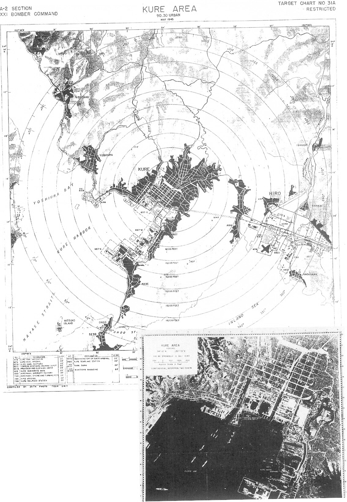
資料編の目次へ
Ｆ Ｃ．Ｉ．Ｕ （損害査定 報告）
機密
C.I.U
第２０航空軍
軍郵便局 234、 郵便局長気付け
サン フランシスコ、 カリフォルニア
１９４５年８月１５日
損害査定 報告 １８０
呉 ９０ー３０ 市街地区
第２１攻撃任務２４０、１９４５年７月１日 第５０航空団
損害概要
市街区域：合計 3.26平方マイル ; 破壊地域 1.3平方マイル
破壊地域割合 ４０％
計画攻撃目標地域：2.0平方マイル 破壊地域割合：65％
現在までの損害地域総計：1.3平方マイル 市街地域での割合：40％
今回の爆撃で損害を受けた攻撃目標件数：４件；その他なし．
註記：以前の損害なし
市街地域内での損害：
破壊された
今回の爆撃による地域損害： 平方マイル 平方マイル ％
市街地域（市内） 2.61 1.06 40.5
市街地域（工業） .65 .24 36.5
市街地域（計） 3.26 1.3 40.0
攻撃目標損害： 損害
90.30 - 798 呉駅 30% の建物が破壊された
” 657B 呉海軍造船所 8% が破壊された
″ 657C 水雷艇基地．水雷庫 80% が破壊された
″ 657D 食料・衣服庫 90% が破壊された
市街区域外の損害：（市の中心から半径５マイルの範囲内）損害なし
攻撃目標損害： 損害
90.30 - 656 呉海軍飛行場 不明（海軍船舶への空襲につ
いても）
″ 657A 呉海軍造兵廠 72% 以前に受けた損害
″ 658 呉潜水艦基地 なし
″ 730 &794 広発動機・タービン工場 51.5% 以前に受けた損
害
″ 2133 呉海軍飛行場補助燃料タンク施設 なし
″ XXI - 6120 弾薬庫 なし
参照：陸軍航空隊航空目標地点ホルダー 90.30 - 呉
写真：空襲前： 3PR5M135-2: 12 -14 1945年４月１２日
空襲後： 3PR5M391-3: 34 -38 1945年８月７日
同封物： 1. 損害を示す連続航空写真
２．空襲後のプリント
承認／署名
分類：B級
機密
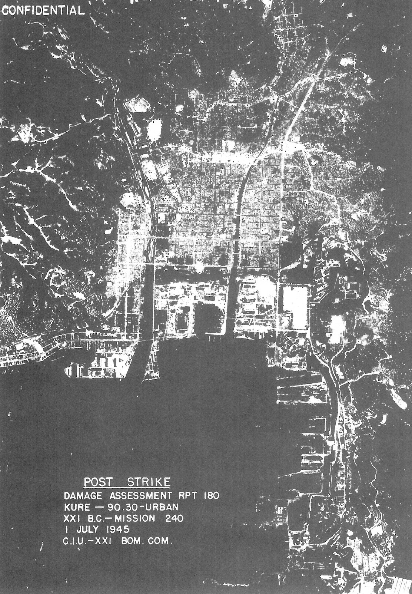
資料編の目次へ
おわりに ...アメリカ軍の記録と呉市民の体験記...
呉市街地空襲の状況は、テニアンを発した百六十機(日本側の記録で
は延べ八十機）のＢ二十九の編隊が、足摺岬上空を通って広島湾沿い
に呉湾に入り、休山方面から呉市街をレーダー爆撃をし、のち一部
（爆撃漏れの所）を有視界爆撃のうえ、灰が峰・野呂山の北側を廻っ
て、大久野島上空から四国上空を通って硫黄島・テニアンに帰還、と
米軍の記録にあります。
狭い呉市上空では、編隊の幅から見て、攻撃命令書の攻撃線から入っ
た最初の爆撃編隊が、休山のふもとの宮原を通ると、次の編隊は本通・
中通には爆撃できず、呉市民の体験記にあるように、周辺の山側から
焼夷爆弾を投下して逃げ道をふさいだ、という形になったのかも知れ
ません。
このような呉空襲の実態を解明し、呉市民の体験と照合するには、行
政の協力なしには時間がかかると思いますが、少しずつでも解明して
いきたいものです。
呉戦災を記録する会が発足して二十余年を経ました。その間、折々に
戦災展を開催したり、映画「赤い月の街ー呉空襲ー」の制作上映や写
真資料集「呉の戦災」の発刊を通して、多くの方から体験談を聞かせ
ていただきました。今回は整理が間に合いませんでしたが、今後も多
くの方から体験談の収録をし、まとめて刊行したいと思っています。
最後に、本書では富田和男さん提供の「写真週報」（内閣情報部編輯）
を多く引用させていただきました。かっての時代の雰囲気を知ること
で、体験記の内容を理解するのに役立つものと思います。
本書の編集作業は呉戦災を記録する会の平賀伸一、吉田明雄、林茂、
朝倉邦夫が当たりました。
米軍資料の翻訳は神垣惟秀さんに、全体的な編集・レイアウトなどは、
「く･れ･ば･ん」の前田 さんにお願いししたところ、快くご協力を
いただき、出版にこぎつけました。改めてみなさんに感謝いたします。
（朝倉）
「黒い盆地...呉市民の戦災応募体験記と資料...」
一九九六年七月一日
編著者 呉戦災を記録する会
編著者住所 広島県呉市宮原3丁目4-23
電話・FAX 0823-23-0104
朝倉邦夫 方
「黒い盆地」目次へ戻る
トップページに戻る
（蜂の巣状の焼夷弾筒）
「 生活を破壊した呉空襲」
...（戦争はもう沢山）
（水を飲ませたっかた）
...焼夷弾筒を寄贈